Geany
A fast, light, GTK+ IDE
| Authors: | Enrico Tröger
Nick Treleaven Frank Lanitz Colomban Wendling Matthew Brush |
|---|---|
| Date: | 2012-06-18 |
| Version: | 1.22 |
Copyright © 2005-2012
This document is distributed under the terms of the GNU General Public License as published by the Free Software Foundation; either version 2 of the License, or (at your option) any later version. A copy of this license can be found in the file COPYING included with the source code of this program, and also in the chapter GNU General Public License.
Contents
- Introduction
- Installation
- Usage
- Getting started
- The Geany workspace
- Command line options
- General
- Documents
- Character sets and Unicode Byte-Order-Mark (BOM)
- Editing
- Search, replace and go to
- View menu
- Tags
- Preferences
- General Startup preferences
- General Miscellaneous preferences
- Interface preferences
- Interface Notebook tab preferences
- Interface Toolbar preferences
- Editor Features preferences
- Editor Indentation preferences
- Editor Completions preferences
- Editor Display preferences
- Files preferences
- Tools preferences
- Template preferences
- Keybinding preferences
- Printing preferences
- Various preferences
- Terminal (VTE) preferences
- Project management
- Build menu
- Printing support
- Plugins
- Keybindings
- Switching documents
- Configurable keybindings
- File keybindings
- Editor keybindings
- Clipboard keybindings
- Select keybindings
- Insert keybindings
- Format keybindings
- Settings keybindings
- Search keybindings
- Go to keybindings
- View keybindings
- Focus keybindings
- Notebook tab keybindings
- Document keybindings
- Project keybindings
- Build keybindings
- Tools keybindings
- Help keybindings
- Configuration files
- Configuration file paths
- Tools menu items
- Global configuration file
- Filetype definition files
- Filetype extensions
- Filetype group membership
- Preferences file format
- Project file format
- Templates
- Customizing the toolbar
- Plugin documentation
- Contributing to this document
- Scintilla keyboard commands
- Tips and tricks
- Compile-time options
- GNU General Public License
- License for Scintilla and SciTE
Introduction
About Geany
Geany is a small and lightweight Integrated Development Environment. It was developed to provide a small and fast IDE, which has only a few dependencies on other packages. Another goal was to be as independent as possible from a particular Desktop Environment like KDE or GNOME - Geany only requires the GTK2 runtime libraries.
Some basic features of Geany:
- Syntax highlighting
- Code folding
- Autocompletion of symbols/words
- Construct completion/snippets
- Auto-closing of XML and HTML tags
- Calltips
- Many supported filetypes including C, Java, PHP, HTML, Python, Perl, Pascal, and others
- Symbol lists
- Code navigation
- Build system to compile and execute your code
- Simple project management
- Plugin interface
Where to get it
You can obtain Geany from http://www.geany.org/ or perhaps also from your distribution. For a list of available packages, please see http://www.geany.org/Download/ThirdPartyPackages.
License
Geany is distributed under the terms of the GNU General Public License as published by the Free Software Foundation; either version 2 of the License, or (at your option) any later version. A copy of this license can be found in the file COPYING included with the source code of this program and in the chapter, GNU General Public License.
The included Scintilla library (found in the subdirectory scintilla/) has its own license, which can be found in the chapter, License for Scintilla and SciTE.
About this document
This documentation is available in HTML and text formats. The latest version can always be found at http://www.geany.org/.
If you want to contribute to it, see Contributing to this document.
Installation
Requirements
You will need the GTK (>= 2.16.0) libraries and their dependencies (Pango, GLib and ATK). Your distro should provide packages for these, usually installed by default. For Windows, you can download an installer from the website which bundles these libraries.
Binary packages
There are many binary packages available. For an up-to-date but maybe incomplete list see http://www.geany.org/Download/ThirdPartyPackages.
Source compilation
Compiling Geany is quite easy. To do so, you need the GTK (>= 2.16.0) libraries and header files. You also need the Pango, GLib and ATK libraries and header files. All these files are available at http://www.gtk.org, but very often your distro will provide development packages to save the trouble of building these yourself.
Furthermore you need, of course, a C and C++ compiler. The GNU versions of these tools are recommended.
Autotools based build system
The Autotools based build system is very mature and has been well tested. To use it, you just need the Make tool, preferably GNU Make.
Then run the following commands:
$ ./configure $ make
Then as root:
% make install
Waf based build system
The Waf build system is still quite young and under heavy development but already in a usable state. In contrast to the Autotools system, Waf needs Python. So before using Waf, you need to install Python on your system. The advantage of the Waf build system over the Autotools based build system is that the whole build process might be a bit faster. Especially when you use the Waf cache feature for repetitive builds (e.g. when changing only a few source files to test something) will become much faster since Waf will cache and re-use the unchanged built files and only compile the changed code again. See Waf Cache for details. To build Geany with Waf as run:
$ ./waf configure $ ./waf build
Then as root:
% ./waf install
Waf cache
The Waf build system has a nice and interesting feature which can help to avoid a lot of unnecessary rebuilding of unchanged code. This often happens when developing new features or trying to debug something in Geany. Waf is able to store and retrieve the object files from a cache. This cache is declared using the environment variable WAFCACHE. A possible location of the cache directory could be ~/.cache/waf. In order to make use of this, you first need to create this directory:
$ mkdir -p ~/.cache/waf
then add the environment variable to your shell configuration (the following example is for Bash and should be adjusted to your used shell):
export WAFCACHE=/home/username/.cache/waf
Remember to replace username with your actual username.
More information about the Waf cache feature are available at http://code.google.com/p/waf/wiki/CacheObjectFiles.
Cleaning the cache
You should be careful about the size of the cache directory as it may grow rapidly over time. Waf doesn't do any cleaning or other house-keeping of the cache yet, so you need to keep it clean by yourself. An easy way to keep it clean is to run the following command regularly to remove old cached files:
$ find /home/username/.cache/waf -mtime +14 -exec rm {} \;
This will delete all files in the cache directory which are older than 14 days.
For details about the find command and its options, check its manual page.
Custom installation
The configure script supports several common options, for a detailed list, type:
$ ./configure --help
- or::
- $ ./waf --help
(depending on which build system you use).
You may also want to read the INSTALL file for advanced installation options.
- See also Compile-time options.
Dynamic linking loader support and VTE
In the case that your system lacks dynamic linking loader support, you probably want to pass the option --disable-vte to the configure script. This prevents compiling Geany with dynamic linking loader support for automatically loading libvte.so.4 if available.
Build problems
If there are any errors during compilation, check your build environment and try to find the error, otherwise contact the mailing list or one the authors. Sometimes you might need to ask for specific help from your distribution.
Installation prefix
If you want to find Geany's system files after installation you may want to know the installation prefix.
Pass the --print-prefix option to Geany to check this - see Command line options. The first path is the prefix.
On Unix-like systems this is commonly /usr if you installed from a binary package, or /usr/local if you build from source.
Note
Editing system files is not necessary as you should use the per-user configuration files instead, which don't need root permissions. See Configuration files.
Usage
Getting started
You can start Geany in the following ways:
From the Desktop Environment menu:
Choose in your application menu of your used Desktop Environment: Development --> Geany.
From the command line:
To start Geany from a command line, type the following and press Return:
% geany
The Geany workspace
The Geany window is shown in the following figure:
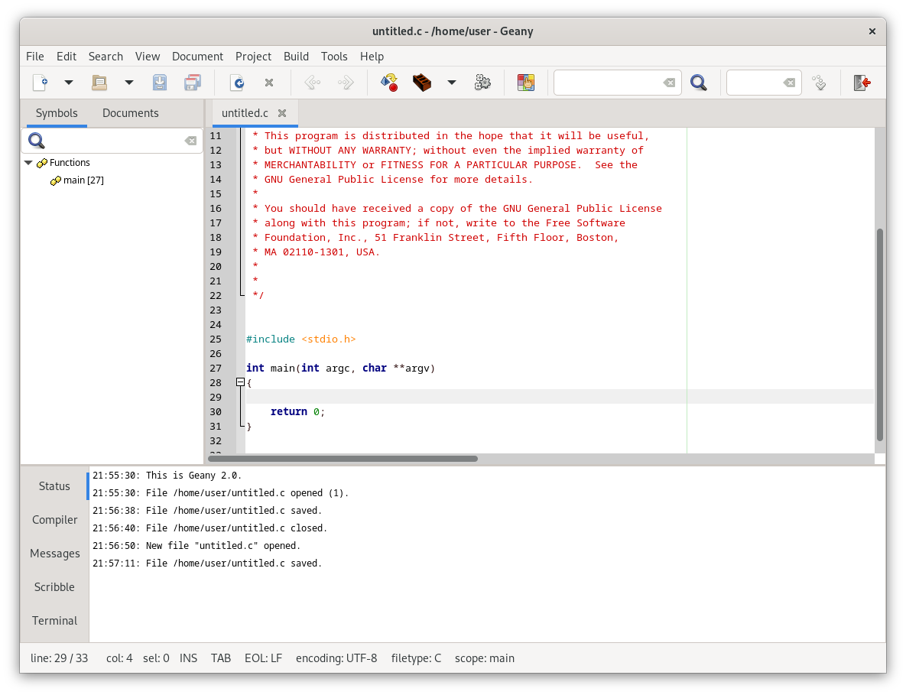The workspace has the following parts:
- The menu.
- An optional toolbar.
- An optional sidebar that can show the following tabs:
- Documents - A document list, and
- Symbols - A list of symbols in your code.
- The main editor window.
- An optional message window which can show the following tabs:
- Status - A list of status messages.
- Compiler - The output of compiling or building programs.
- Messages - Results of 'Find Usage', 'Find Usage' 'Find in Files' and other actions
- Scribble - A text scratchpad for any use.
- Terminal - An optional terminal window.
- A status bar
Most of these can be configured in the Interface preferences, the View menu, or the popup menu for the relevant area.
Additional tabs may be added to the sidebar and message window by plugins.
The position of the tabs can be selected in the interface preferences.
The sizes of the sidebar and message window can be adjusted by dragging the dividers.
Command line options
| Short option | Long option | Function |
|---|---|---|
| none | +number | Set initial line number for the first opened file (same as --line, do not put a space between the + sign and the number). E.g. "geany +7 foo.bar" will open the file foo.bar and place the cursor in line 7. |
| none | --column | Set initial column number for the first opened file. |
| -c dir_name | --config=directory_name | Use an alternate configuration directory. The default configuration directory is ~/.config/geany/ and that is where geany.conf and other configuration files reside. |
| none | --ft-names | Print a list of Geany's internal filetype names (useful for snippets configuration). |
| -g | --generate-tags | Generate a global tags file (see Generating a global tags file). |
| -P | --no-preprocessing | Don't preprocess C/C++ files when generating tags. |
| -i | --new-instance | Do not open files in a running instance, force opening a new instance. Only available if Geany was compiled with support for Sockets. |
| -l | --line | Set initial line number for the first opened file. |
| none | --list-documents | Return a list of open documents in a running Geany instance. This can be used to read the currently opened documents in Geany from an external script or tool. The returned list is separated by newlines (LF) and consists of the full, UTF-8 encoded filenames of the documents. Only available if Geany was compiled with support for Sockets. |
| -m | --no-msgwin | Do not show the message window. Use this option if you do not need compiler messages or VTE support. |
| -n | --no-ctags | Do not load symbol completion and call tip data. Use this option if you do not want to use them. |
| -p | --no-plugins | Do not load plugins or plugin support. |
| none | --print-prefix | Print installation prefix, the data directory, the lib directory and the locale directory (in that order) to stdout, one line each. This is mainly intended for plugin authors to detect installation paths. |
| -r | --read-only | Open all files given on the command line in read-only mode. This only applies to files opened explicitly from the command line, so files from previous sessions or project files are unaffected. |
| -s | --no-session | Do not load the previous session's files. |
| -t | --no-terminal | Do not load terminal support. Use this option if you do not want to load the virtual terminal emulator widget at startup. If you do not have libvte.so.4 installed, then terminal-support is automatically disabled. Only available if Geany was compiled with support for VTE. |
| none | --socket-file | Use this socket filename for communication with a running Geany instance. This can be used with the following command to execute Geany on the current workspace:
geany --socket-file=/tmp/geany-sock-$(xprop -root _NET_CURRENT_DESKTOP | awk '{print $3}')
|
| none | --vte-lib | Specify explicitly the path including filename or only the filename to the VTE library, e.g. /usr/lib/libvte.so or libvte.so. This option is only needed when the auto-detection does not work. Only available if Geany was compiled with support for VTE. |
| -v | --verbose | Be verbose (print useful status messages). |
| -V | --version | Show version information and exit. |
| -? | --help | Show help information and exit. |
| none | [files ...] | Open all given files at startup. This option causes Geany to ignore loading stored files from the last session (if enabled). Geany also recognizes line and column information when appended to the filename with colons, e.g. "geany foo.bar:10:5" will open the file foo.bar and place the cursor in line 10 at column 5. Projects can also be opened but a project file (*.geany) must be the first non-option argument. All additionally given files are ignored. |
You can also pass line number and column number information, e.g.:
geany some_file.foo:55:4
Geany supports all generic GTK options, a list is available on the help screen.
General
Startup
At startup, Geany loads all files from the last time Geany was launched. You can disable this feature in the preferences dialog (see General Startup preferences).
You can start several instances of Geany, but only the first will load files from the last session. In the subsequent instances, you can find these files in the file menu under the "Recent files" item. By default this contains the last 10 recently opened files. You can change the number of recently opened files in the preferences dialog.
To run a second instance of Geany, do not specify any filenames on the command-line, or disable opening files in a running instance using the appropriate command line option.
Opening files from the command-line in a running instance
Geany detects if there is an an instance of itself already running and opens files from the command-line in that instance. So, Geany can be used to view and edit files by opening them from other programs such as a file manager.
You can also pass line number and column number information, e.g.:
geany some_file.foo:55:4
This would open the file some_file.foo with the cursor on line 55, column 4.
If you do not like this for some reason, you can disable using the first instance by using the appropriate command line option -- see the section called Command line options.
Virtual terminal emulator widget (VTE)
If you have installed libvte.so on your system, it is loaded automatically by Geany, and you will have a terminal widget in the notebook at the bottom.
If Geany cannot find any libvte.so at startup, the terminal widget will not be loaded. So there is no need to install the package containing this file in order to run Geany. Additionally, you can disable the use of the terminal widget by command line option, for more information see the section called Command line options.
You can use this terminal (from now on called VTE) much as you would a terminal program like xterm. There is basic clipboard support. You can paste the contents of the clipboard by pressing the right mouse button to open the popup menu, and choosing Paste. To copy text from the VTE, just select the desired text and then press the right mouse button and choose Copy from the popup menu. On systems running the X Window System you can paste the last selected text by pressing the middle mouse button in the VTE (on 2-button mice, the middle button can often be simulated by pressing both mouse buttons together).
In the preferences dialog you can specify a shell which should be started in the VTE. To make the specified shell a login shell just use the appropriate command line options for the shell. These options should be found in the manual page of the shell. For zsh and bash you can use the argument --login.
Note
Geany tries to load libvte.so. If this fails, it tries to load some other filenames. If this fails too, you should check whether you installed libvte correctly. Again note, Geany will run without this library.
It could be, that the library is called something else than libvte.so (e.g. on FreeBSD 6.0 it is called libvte.so.8). If so please set a link to the correct file (as root):
# ln -s /usr/lib/libvte.so.X /usr/lib/libvte.so
Obviously, you have to adjust the paths and set X to the number of your libvte.so.
You can also specify the filename of the VTE library to use on the command line (see the section called Command line options) or at compile time by specifying the command line option --with-vte-module-path to ./configure.
Defining own widget styles using .gtkrc-2.0
You can define your widget style for many of Geany's GUI parts. To do this, just edit your .gtkrc-2.0 (usually found in your home directory on UNIX-like systems and in the etc subdirectory of your Geany installation on Windows).
To have a defined style used by Geany you must assign it to at least one of Geany's widgets. For example use the following line:
widget "Geany*" style "geanyStyle"
This would assign your style "geany_style" to all Geany widgets. You can also assign styles only to specific widgets. At the moment you can use the following widgets:
- GeanyMainWindow
- GeanyEditMenu
- GeanyToolbarMenu
- GeanyDialog
- GeanyDialogPrefs
- GeanyDialogProject
- GeanyDialogSearch
- GeanyMenubar
- GeanyToolbar
An example of a simple .gtkrc-2.0:
style "geanyStyle"
{
font_name="Sans 12"
}
widget "GeanyMainWindow" style "geanyStyle"
style "geanyStyle"
{
font_name="Sans 10"
}
widget "GeanyPrefsDialog" style "geanyStyle"
Documents
Switching between documents
The documents list and the editor tabs are two different ways to switch between documents using the mouse. When you hit the key combination to move between tabs, the order is determined by the tab order. It is not alphabetical as shown in the documents list (regardless of whether or not editor tabs are visible).
See the Notebook tab keybindings section for useful shortcuts including for Most-Recently-Used document switching.
Character sets and Unicode Byte-Order-Mark (BOM)
Using character sets
Geany provides support for detecting and converting character sets. So you can open and save files in different character sets, and even convert a file from one character set to another. To do this, Geany uses the character conversion capabilities of the GLib library.
Only text files are supported, i.e. opening files which contain NULL-bytes may fail. Geany will try to open the file anyway but it is likely that the file will be truncated because it can only be read up to the first occurrence of a NULL-byte. All characters after this position are lost and are not written when you save the file.
Geany tries to detect the encoding of a file while opening it, but auto-detecting the encoding of a file is not easy and sometimes an encoding might not be detected correctly. In this case you have to set the encoding of the file manually in order to display it correctly. You can this in the file open dialog by selecting an encoding in the drop down box or by reloading the file with the file menu item "Reload as". The auto-detection works well for most encodings but there are also some encodings where it is known that auto-detection has problems.
There are different ways to set different encodings in Geany:
Using the file open dialog
This opens the file with the encoding specified in the encoding drop down box. If the encoding is set to "Detect from file" auto-detection will be used. If the encoding is set to "Without encoding (None)" the file will be opened without any character conversion and Geany will not try to auto-detect the encoding (see below for more information).
Using the "Reload as" menu item
This item reloads the current file with the specified encoding. It can help if you opened a file and found out that the wrong encoding was used.
Using the "Set encoding" menu item
Contrary to the above two options, this will not change or reload the current file unless you save it. It is useful when you want to change the encoding of the file.
Specifying the encoding in the file itself
As mentioned above, auto-detecting the encoding of a file may fail on some encodings. If you know that Geany doesn't open a certain file, you can add the specification line, described in the next section, to the beginning of the file to force Geany to use a specific encoding when opening the file.
In-file encoding specification
Geany detects meta tags of HTML files which contain charset information like:
<meta http-equiv="content-type" content="text/html; charset=ISO-8859-15" />
and the specified charset is used when opening the file. This is useful if the encoding of the file cannot be detected properly. For non-HTML files you can also define a line like:
/* geany_encoding=ISO-8859-15 */
or:
# geany_encoding=ISO-8859-15 #
to force an encoding to be used. The #, /* and */ are examples of filetype-specific comment characters. It doesn't matter which characters are around the string " geany_encoding=ISO-8859-15 " as long as there is at least one whitespace character before and after this string. Whitespace characters are in this case a space or tab character. An example to use this could be you have a file with ISO-8859-15 encoding but Geany constantly detects the file encoding as ISO-8859-1. Then you simply add such a line to the file and Geany will open it correctly the next time.
Since Geany 0.15 you can also use lines which match the regular expression used to find the encoding string: coding[\t ]*[:=][\t ]*([a-z0-9-]+)[\t ]*
Note
These specifications must be in the first 512 bytes of the file. Anything after the first 512 bytes will not be recognized.
Some examples are:
# encoding = ISO-8859-15
or:
# coding: ISO-8859-15
Special encoding "None"
There is a special encoding "None" which uses no encoding. It is useful when you know that Geany cannot auto-detect the encoding of a file and it is not displayed correctly. Especially when the file contains NULL-bytes this can be useful to skip auto detection and open the file properly at least until the occurrence of the first NULL-byte. Using this encoding opens the file as it is without any character conversion.
Unicode Byte-Order-Mark (BOM)
Furthermore, Geany detects a Unicode Byte Order Mark (see http://en.wikipedia.org/wiki/Byte_Order_Mark for details). Of course, this feature is only available if the opened file is in a Unicode encoding. The Byte Order Mark helps to detect the encoding of a file, e.g. whether it is UTF-16LE or UTF-16BE and so on. On Unix-like systems using a Byte Order Mark could cause some problems for programs not expecting it, e.g. the compiler gcc stops with stray errors, PHP does not parse a script containing a BOM and script files starting with a she-bang maybe cannot be started. In the status bar you can easily see whether the file starts with a BOM or not.
If you want to set a BOM for a file or if you want to remove it from a file, just use the document menu and toggle the checkbox.
Note
If you are unsure what a BOM is or if you do not understand where to use it, then it is probably not important for you and you can safely ignore it.
Editing
Folding
Geany provides basic code folding support. Folding means the ability to show and hide parts of the text in the current file. You can hide unimportant code sections and concentrate on the parts you are working on and later you can show hidden sections again. In the editor window there is a small grey margin on the left side with [+] and [-] symbols which show hidden parts and hide parts of the file respectively. By clicking on these icons you can simply show and hide sections which are marked by vertical lines within this margin. For many filetypes nested folding is supported, so there may be several fold points within other fold points.
Note
You can customize the folding icon and line styles - see the filetypes.common Folding Settings.
If you don't like it or don't need it at all, you can simply disable folding support completely in the preferences dialog.
The folding behaviour can be changed with the "Fold/Unfold all children of a fold point" option in the preference dialog. If activated, Geany will unfold all nested fold points below the current one if they are already folded (when clicking on a [+] symbol). When clicking on a [-] symbol, Geany will fold all nested fold points below the current one if they are unfolded.
This option can be inverted by pressing the Shift key while clicking on a fold symbol. That means, if the "Fold/Unfold all children of a fold point" option is enabled, pressing Shift will disable it for this click and vice versa.
Column mode editing (rectangular selections)
There is basic support for column mode editing. To use it, create a rectangular selection by holding down the Control and Shift keys (or Alt and Shift on Windows) while selecting some text. Once a rectangular selection exists you can start editing the text within this selection and the modifications will be done for every line in the selection.
It is also possible to create a zero-column selection - this is useful to insert text on multiple lines.
Drag and drop of text
If you drag selected text in the editor widget of Geany the text is moved to the position where the mouse pointer is when releasing the mouse button. Holding Control when releasing the mouse button will copy the text instead. This behaviour was changed in Geany 0.11 - before the selected text was copied to the new position.
Indentation
Geany allows each document to indent either with a tab character, multiple spaces or a combination of both. The default indent settings are set in Editor Indentation preferences (see the link for more information).
The default settings can be overridden per-document using the Document menu. They can also be overridden by projects - see Project management.
The indent mode for the current document is shown on the status bar as follows:
- TAB
- Indent with Tab characters.
- SP
- Indent with spaces.
- T/S
- Indent with tabs and spaces, depending on how much indentation is on a line.
Applying new indentation settings
After changing the default settings you may wish to apply the new settings to every document in the current session. To do this use the Project->Apply Default Indentation menu item.
Detecting indent type
The Detect from file indentation preference can be used to scan each file as it's opened and set the indent type based on how many lines start with a tab vs. 2 or more spaces.
Auto-indentation
When enabled, auto-indentation happens when pressing Enter in the Editor. It adds a certain amount of indentation to the new line so the user doesn't always have to indent each line manually.
Geany has four types of auto-indentation:
- None
- Disables auto-indentation completely.
- Basic
- Adds the same amount of whitespace on a new line as on the last line.
- Current chars
- Does the same as Basic but also indents a new line after an opening brace '{', and de-indents when typing a closing brace '}'. For Python, a new line will be indented after typing ':' at the end of the previous line.
- Match braces
- Similar to Current chars but the closing brace will be aligned to match the indentation of the line with the opening brace.
There is also XML-tag auto-indentation. This is enabled when the mode is more than just Basic, and is also controlled by a filetype setting - see xml_indent_tags.
Bookmarks
Geany provides a handy bookmarking feature that lets you mark one or more lines in a document, and return the cursor to them using a key combination.
To place a mark on a line, either left-mouse-click in the left margin of the editor window, or else use Ctrl-m. This will produce a small green plus symbol in the margin. You can have as many marks in a document as you like. Click again (or use Ctrl-m again) to remove the bookmark. To remove all the marks in a given document, use "Remove Markers" in the Document menu.
To navigate down your document, jumping from one mark to the next, use Ctrl-. (control period). To go in the opposite direction on the page, use Ctrl-, (control comma). Using the bookmarking feature together with the commands to switch from one editor tab to another (Ctrl-PgUp/PgDn and Ctrl-Tab) provides a particularly fast way to navigate around multiple files.
Sending text through custom commands
You can define several custom commands in Geany and send the current selection to one of these commands using the Edit->Format->Send Selection to menu or keybindings. The output of the command will be used to replace the current selection. This makes it possible to use text formatting tools with Geany in a general way.
The selected text will be sent to the standard input of the executed command, so the command should be able to read from it and it should print all results to its standard output which will be read by Geany. To help finding errors in executing the command, the output of the program's standard error will be printed on Geany's standard output.
If there is no selection, the whole current line is used instead.
To add a custom command, use the Send Selection to->Set Custom Commands menu item. Click on Add to get a new item and type the command. You can also specify some command line options. Empty commands are not saved.
Normal shell quoting is supported, so you can do things like:
- sed 's/\./(dot)/g'
The above example would normally be done with the Replace all function, but it can be handy to have common commands already set up.
Context actions
You can execute the context action command on the current word at the cursor position or the available selection. This word or selection can be used as an argument to the command. The context action is invoked by a menu entry in the popup menu of the editor and also a keyboard shortcut (see the section called Keybindings).
The command can be specified in the preferences dialog and also for each filetype (see "context_action_cmd" in the section called Filetype configuration). When the context action is invoked, the filetype specific command is used if available, otherwise the command specified in the preferences dialog is executed.
The current word or selection can be referred with the wildcard "%s" in the command, it will be replaced by the current word or selection before the command is executed.
For example a context action can be used to open API documentation in a browser window, the command to open the PHP API documentation would be:
firefox "http://www.php.net/%s"
when executing the command, the %s is substituted by the word near the cursor position or by the current selection. If the cursor is at the word "echo", a browser window will open(assumed your browser is called firefox) and it will open the address: http://www.php.net/echo.
Autocompletion
Geany can offer a list of possible completions for symbols defined in the tags and for all words in a document.
The autocompletion list for symbols is presented when the first few characters of the symbol are typed (configurable, see Editor Completions preferences, default 4) or when the Complete word keybinding is pressed (configurable, see Editor keybindings, default Ctrl-Space).
When the defined keybinding is typed and the Autocomplete all words in document preference (in Editor Completions preferences) is selected then the autocompletion list will show all matching words in the document, if there are no matching symbols.
If you don't want to use autocompletion it can be dismissed until the next symbol by pressing Escape. The autocompletion list is updated as more characters are typed so that it only shows completions that start with the characters typed so far. If no symbols begin with the sequence, the autocompletion window is closed.
The up and down arrows will move the selected item. The highlighted item on the autocompletion list can be chosen from the list by pressing Enter/Return. You can also double-click to select an item. The sequence will be completed to match the chosen item, and if the Drop rest of word on completion preference is set (in Editor Completions preferences) then any characters after the cursor that match a symbol or word are deleted.
Word part completion
By default, pressing Tab will complete the selected item by word part; useful e.g. for adding the prefix gtk_combo_box_entry_ without typing it manually:
- gtk_com<TAB>
- gtk_combo_<TAB>
- gtk_combo_box_<e><TAB>
- gtk_combo_box_entry_<s><ENTER>
- gtk_combo_box_entry_set_text_column
The key combination can be changed from Tab - See Editor keybindings. If you clear/change the key combination for word part completion, Tab will complete the whole word instead, like Enter.
Scope autocompletion
E.g.:
struct
{
int i;
char c;
} foo;
When you type foo. it will show an autocompletion list with 'i' and 'c' symbols.
It only works for languages that set parent scope names for e.g. struct members. Currently this means C-like languages. The C tag parser only parses global scopes, so this won't work for structs or objects declared in local scope.
User-definable snippets
Snippets are small strings or code constructs which can be replaced or completed to a more complex string. So you can save a lot of time when typing common strings and letting Geany do the work for you. To know what to complete or replace Geany reads a configuration file called snippets.conf at startup.
Maybe you need to often type your name, so define a snippet like this:
[Default] myname=Enrico Tröger
Every time you write myname <TAB> in Geany, it will replace "myname" with "Enrico Tröger". The key to start autocompletion can be changed in the preferences dialog, by default it is TAB. The corresponding keybinding is called Complete snippet.
Paths
You can override the default snippets using the user snippets.conf file. Use the Tools->Configuration Files->snippets.conf menu item. See also Configuration file paths.
This adds the default settings to the user file if the file doesn't exist. Alternatively the file can be created manually, adding only the settings you want to change. All missing settings will be read from the system snippets file.
Snippet groups
The file snippets.conf contains sections defining snippets that are available for particular filetypes and in general.
The two sections "Default" and "Special" apply to all filetypes. "Default" contains all snippets which are available for every filetype and "Special" contains snippets which can only be used in other snippets. So you can define often used parts of snippets and just use the special snippet as a placeholder (see the snippets.conf for details).
You can define sections with the name of a filetype eg "C++". The snippets in that section are only available for use in files with that filetype. Snippets in filetype sections will hide snippets with the same name in the "Default" section when used in a file of that filetype.
Substitution sequences for snippets
To define snippets you can use several special character sequences which will be replaced when using the snippet:
| \n or %newline% | Insert a new line (it will be replaced by the used EOL char(s): LF, CR/LF, or CR). |
| \t or %ws% | Insert an indentation step, it will be replaced according to the current document's indent mode. |
| \s | \s to force whitespace at beginning or end of a value ('key= value' won't work, use 'key=\svalue') |
| %cursor% | Place the cursor at this position after completion has been done. You can define multiple %cursor% wildcards and use the keybinding Move cursor in snippet to jump to the next defined cursor position in the completed snippet. |
| %...% | "..." means the name of a key in the "Special" section. If you have defined a key "brace_open" in the "Special" section you can use %brace_open% in any other snippet. |
Snippet names must not contain spaces otherwise they won't work correctly. But beside that you can define almost any string as a snippet and use it later in Geany. It is not limited to existing contructs of certain programming languages(like if, for, switch). Define whatever you need.
Template wildcards
Since Geany 0.15 you can also use most of the available templates wildcards listed in Template wildcards. All wildcards which are listed as available in snippets can be used. For instance to improve the above example:
[Default]
myname=My name is {developer}
mysystem=My system: {command:uname -a}
this will replace myname with "My name is " and the value of the template preference developer.
Word characters
You can change the way Geany recognizes the word to complete, that is how the start and end of a word is recognised when the snippet completion is requested. The section "Special" may contain a key "wordchars" which lists all characters a string may contain to be recognized as a word for completion. Leave it commented to use default characters or define it to add or remove characters to fit your needs.
Snippet keybindings
Normally you would type the snippet name and press Tab. However, you can define keybindings for snippets under the Keybindings group in snippets.conf:
[Keybindings] for=<Ctrl>7 block_cursor=<Ctrl>8
Note
Snippet keybindings may be overridden by Geany's configurable keybindings.
Inserting Unicode characters
You can insert Unicode code points by hitting Ctrl-Shift-u, then still holding Ctrl-Shift, type some hex digits representing the code point for the character you want and hit Enter or Return (still holding Ctrl-Shift). If you release Ctrl-Shift before hitting Enter or Return (or any other character), the code insertion is completed, but the typed character is also entered. In the case of Enter/Return, it is a newline, as you might expect.
In some earlier versions of Geany, you might need to first unbind Ctrl-Shift-u in the keybinding preferences, then select Tools->Reload Configuration or restart Geany. Note that it works slightly differently from other GTK applications, in that you'll need to continue to hold down the Ctrl and Shift keys while typing the code point hex digits (and the Enter or Return to finish the code point).
Search, replace and go to
This section describes search-related commands from the Search menu and the editor window's popup menu:
- Find
- Find selection
- Find usage
- Find in files
- Replace
- Go to tag definition
- Go to tag declaration
- Go to line
Toolbar entries
There are also two toolbar entries:
- Search bar
- Go to line entry
There are keybindings to focus each of these - see Focus keybindings. Pressing Escape will then focus the editor.
Search bar
The quickest way to find some text is to use the search bar entry in the toolbar. This performs a case-insensitive search in the current document whilst you type. Pressing Enter will search again, and pressing Shift-Enter will search backwards.
Find
The Find dialog is used for finding text in one or more open documents.
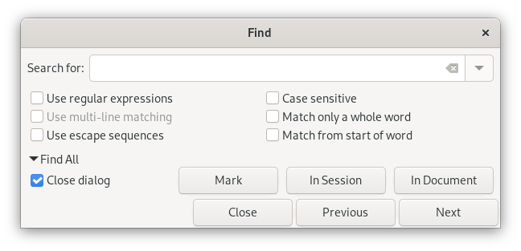Matching options
The syntax for the Use regular expressions option is shown in Regular expressions.
Note
Use escape sequences is implied for regular expressions.
The Use escape sequences option will transform any escaped characters into their UTF-8 equivalent. For example, \t will be transformed into a tab character. Other recognized symbols are: \\, \n, \r, \uXXXX (Unicode characters).
Find all
To find all matches, click on the Find All expander. This will reveal several options:
- In Document
- In Session
- Mark
Find All In Document will show a list of matching lines in the current document in the Messages tab of the Message Window. Find All In Session does the same for all open documents.
Mark will highlight all matches in the current document with a colored box. These markers can be removed by selecting the Remove Markers command from the Document menu.
Change font in search dialog text fields
All search related dialogs use a Monospace for the text input fields to increase the readability of input text. This is useful when you are typing input such as regular expressions with spaces, periods and commas which might it hard to read with a proportional font.
If you want to change the font, you can do this easily by inserting the following style into your .gtkrc-2.0 (usually found in your home directory on UNIX-like systems and in the etc subdirectory of your Geany installation on Windows):
style "search_style"
{
font_name="Monospace 8"
}
widget "GeanyDialogSearch.*.GtkEntry" style:highest "search_style"
Please note the addition of ":highest" in the last line which sets the priority of this style to the highest available. Otherwise, the style is ignored for the search dialogs.
Find selection
The Find Next/Previous Selection commands perform a search for the current selected text. If nothing is selected, by default the current word is used instead. This can be customized by the find_selection_type preference - see Various preferences.
| Value | find_selection_type behaviour |
|---|---|
| 0 | Use the current word (default). |
| 1 | Try the X selection first, then current word. |
| 2 | Repeat last search. |
Find usage
Find usage searches all open files. It is similar to the Find All In Session option in the Find dialog.
If there is a selection, then it is used as the search text; otherwise the current word is used. The current word is either taken from the word nearest the edit cursor, or the word underneath the popup menu click position when the popup menu is used. The search results are shown in the Messages tab of the Message Window.
Find in files
Find in files is a more powerful version of Find usage that searches all files in a certain directory using the Grep tool. The Grep tool must be correctly set in Preferences to the path of the system's Grep utility. GNU Grep is recommended (see note below).
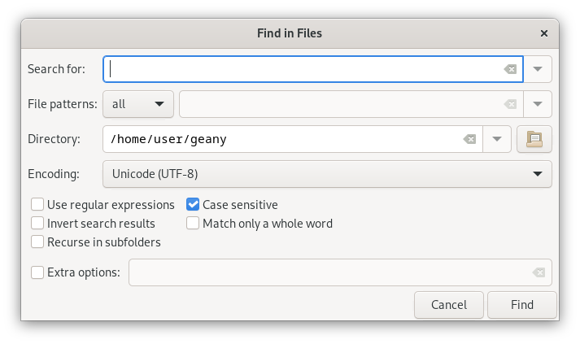The Files setting allows to choose which files are included in the search, depending on the mode:
- All
- Search in all files;
- Project
- Use the current project's patterns, see Project properties;
- Custom
- Use custom patterns.
Both project and custom patterns use a glob-style syntax, each pattern separated by a space. To search all .c and .h files, use: *.c *.h. Note that an empty pattern list searches in all files rather than none.
The Encoding field can be used to define the encoding of the files to be searched. The entered search text is converted to the chosen encoding and the search results are converted back to UTF-8.
The Extra options field is used to pass any additional arguments to the grep tool.
Note
The Files setting uses --include= when searching recursively, Recurse in subfolders uses -r; both are GNU Grep options and may not work with other Grep implementations.
Filtering out version control files
When using the Recurse in subfolders option with a directory that's under version control, you can set the Extra options field to filter out version control files.
If you have GNU Grep >= 2.5.2 you can use the --exclude-dir argument to filter out CVS and hidden directories like .svn.
Example: --exclude-dir=.svn --exclude-dir=CVS
If you have an older Grep, you can try using the --exclude flag to filter out filenames.
SVN Example: --exclude=*.svn-base
The --exclude argument only matches the file name part, not the path.
Replace
The Replace dialog is used for replacing text in one or more open documents.

The Replace dialog has the same options for matching text as the Find dialog. See the section Matching options.
The Use regular expressions option allows regular expressions to be used in the search string and back references in the replacement text -- see the entry for '\n' in Regular expressions.
Replace all
To replace several matches, click on the Replace All expander. This will reveal several options:
- In Document
- In Session
- In Selection
Replace All In Document will replace all matching text in the current document. Replace All In Session does the same for all open documents. Replace All In Selection will replace all matching text in the current selection of the current document.
Go to tag definition
If the current word or selection is the name of a tag definition (e.g. a function name) and the file containing the tag definition is open, this command will switch to that file and go to the corresponding line number. The current word is either the word nearest the edit cursor, or the word underneath the popup menu click position when the popup menu is used.
Note
If the corresponding tag is on the current line, Geany will first look for a tag declaration instead, as this is more useful. Likewise Go to tag declaration will search for a tag definition first in this case also.
Go to tag declaration
Like Go to tag definition, but for a forward declaration such as a C function prototype or extern declaration instead of a function body.
Go to line
Go to a particular line number in the current file.
Regular expressions
You can use regular expressions in the Find and Replace dialogs by selecting the Use regular expressions check box (see Matching options). The syntax is Perl compatible. Basic syntax is described in the table below. For full details, see http://www.geany.org/manual/gtk/glib/glib-regex-syntax.html.
Note
- The Use escape sequences dialog option always applies for regular expressions.
- Searching backwards with regular expressions is not supported.
In a regular expression, the following characters are interpreted:
| . | Matches any character. |
| ( | This marks the start of a region for tagging a match. |
| ) | This marks the end of a tagged region. |
| \n | Where n is 1 through 9 refers to the first through ninth tagged region when searching or replacing. Searching for (Wiki)\1 matches WikiWiki. If the search string was Fred([1-9])XXX and the replace string was Sam\1YYY, when applied to Fred2XXX this would generate Sam2YYY. |
| \0 | When replacing, the whole matching text. |
| \b | This matches a word boundary. |
| \c | A backslash followed by d, D, s, S, w or W, becomes a character class (both inside and outside sets []).
|
| \x | This allows you to use a character x that would otherwise have a special meaning. For example, \[ would be interpreted as [ and not as the start of a character set. Use \\ for a literal backslash. |
| [...] | Matches one of the characters in the set. If the first character in the set is ^, it matches the characters NOT in the set, i.e. complements the set. A shorthand S-E (start dash end) is used to specify a set of characters S up to E, inclusive. The special characters ] and - have no special meaning if they appear first in the set. - can also be last in the set. To include both, put ] first: []A-Z-]. Examples: []|-] matches these 3 chars []-|] matches from ] to | chars [a-z] any lowercase alpha [^]-] any char except - and ] [^A-Z] any char except uppercase alpha [a-zA-Z] any alpha |
| ^ | This matches the start of a line (unless used inside a set, see above). |
| $ | This matches the end of a line. |
| * | This matches 0 or more times. For example, Sa*m matches Sm, Sam, Saam, Saaam and so on. |
| + | This matches 1 or more times. For example, Sa+m matches Sam, Saam, Saaam and so on. |
| ? | This matches 0 or 1 time(s). For example, Joh?n matches John, Jon. |
Note
This table is adapted from Scintilla and SciTE documentation, distributed under the License for Scintilla and SciTE.
Tags
Tags are information that relates symbols in a program with the source file location of the declaration and definition.
Geany has built-in functionality for generating tag information (aka "workspace tags") for supported filetypes when you open a file. You can also have Geany automatically load external tag files (aka "global tags files") upon startup, or manually using Tools --> Load Tags.
Geany uses its own tag file format, similar to what ctags uses (but is incompatible with ctags). You use Geany to generate global tags files, as described below.
Workspace tags
Tags for each document are parsed whenever a file is loaded, saved or modified (see Symbol list update frequency preference in the Editor Completions preferences). These are shown in the Symbol list in the Sidebar. These tags are also used for autocompletion of symbols and calltips for all documents open in the current session that have the same filetype.
The Go to Tag commands can be used with all workspace tags. See Go to tag definition.
Global tags
Global tags are used to provide autocompletion of symbols and calltips without having to open the corresponding source files. This is intended for library APIs, as the tags file only has to be updated when you upgrade the library.
You can load a custom global tags file in two ways:
- Using the Load Tags command in the Tools menu.
- By moving or symlinking tags files to the tags subdirectory of one of the configuration file paths before starting Geany.
You can either download these files or generate your own. They have the format:
name.lang_ext.tags
lang_ext is one of the extensions set for the filetype associated with the tags. See the section called Filetype extensions for more information.
Default global tags files
For some languages, a list of global tags is loaded when the corresponding filetype is first used. Currently these are for:
- C
- Pascal
- PHP
- HTML -- &symbol; completion, e.g. for ampersand, copyright, etc.
- LaTeX
- Python
Global tags file format
Global tags files can have two different formats:
- Tagmanager format
- Pipe-separated format
The first line of global tags files should be a comment, introduced by # followed by a space and a string like format=pipe or format=tagmanager respectively, these are case-sensitive. This helps Geany to read the file properly. If this line is missing, Geany tries to auto-detect the used format but this might fail.
The Tagmanager format is a bit more complex and is used for files created by the geany -g command. There is one tag per line. Different tag attributes like the return value or the argument list are separated with different characters indicating the type of the following argument.
Pipe-separated format
The Pipe-separated format is easier to read and write. There is one tag per line and different tag attributes are separated by the pipe character (|). A line looks like:
basename|string|(string path [, string suffix])|
Except for the first field (tag name), all other field can be left empty but the pipe separator must appear for them.
You can easily write your own global tag files using this format. Just save them in your tags directory, as described earlier in the section Global tags.
Generating a global tags file
You can generate your own global tags files by parsing a list of source files. The command is:
geany -g [-P] <Tag File> <File list>
- Tag File filename should be in the format described earlier -- see the section called Global tags.
- File list is a list of filenames, each with a full path (unless you are generating C/C++ tags and have set the CFLAGS environment variable appropriately).
- -P or --no-preprocessing disables using the C pre-processor to process #include directives for C/C++ source files. Use this option if you want to specify each source file on the command-line instead of using a 'master' header file. Also can be useful if you don't want to specify the CFLAGS environment variable.
Example for the wxD library for the D programming language:
geany -g wxd.d.tags /home/username/wxd/wx/*.d
Generating C/C++ tag files
You may need to first setup the C ignore.tags file.
For C/C++ tag files gcc is required by default, so that header files can be preprocessed to include any other headers they depend upon. If you do not want this, use the -P option described above.
For preprocessing, the environment variable CFLAGS should be set with appropriate -I/path include paths. The following example works with the bash shell, generating tags for the GnomeUI library:
CFLAGS=`pkg-config --cflags libgnomeui-2.0` geany -g gnomeui.c.tags \ /usr/include/libgnomeui-2.0/gnome.h
You can adapt this command to use CFLAGS and header files appropriate for whichever libraries you want.
Generating tag files on Windows
This works basically the same as on other platforms:
"c:\program files\geany\bin\geany" -g c:\mytags.php.tags c:\code\somefile.php
C ignore.tags
You can ignore certain tags for C-based languages if they would lead to wrong parsing of the code. Use the Tools->Configuration Files->ignore.tags menu item to open the user ignore.tags file. See also Configuration file paths.
List all tag names you want to ignore in this file, separated by spaces and/or newlines.
Example:
G_GNUC_NULL_TERMINATED G_GNUC_PRINTF G_GNUC_WARN_UNUSED_RESULT
This will parse code like:
gchar **utils_strv_new(const gchar *first, ...) G_GNUC_NULL_TERMINATED;
More detailed information about ignore tags usage from the Exuberant Ctags manual page:
Specifies a list of identifiers which are to be specially handled while parsing C and C++ source files. This option is specifically provided to handle special cases arising through the use of pre-processor macros. When the identifiers listed are simple identifiers, these identifiers will be ignored during parsing of the source files. If an identifier is suffixed with a '+' character, ctags will also ignore any parenthesis-enclosed argument list which may immediately follow the identifier in the source files. If two identifiers are separated with the '=' character, the first identifiers is replaced by the second identifiers for parsing purposes.
For even more detailed information please read the manual page of Exuberant Ctags.
Geany extends Ctags with a '*' character suffix - this means use prefix matching, e.g. G_GNUC_* will match G_GNUC_NULL_TERMINATED, etc. Note that prefix match items should be put after other items to ensure that items like G_GNUC_PRINTF+ get parsed correctly.
Preferences
You may adjust Geany's settings using the Edit --> Preferences dialog. Any changes you make there can be applied by hitting either the Apply or the OK button. These settings will persist between Geany sessions. Note that most settings here have descriptive popup bubble help -- just hover the mouse over the item in question to get help on it.
You may also adjust some View settings (under the View menu) that persist between Geany sessions. The settings under the Document menu, however, are only for the current document and revert to defaults when restarting Geany.
Note
In the paragraphs that follow, the text describing a dialog tab comes after the screenshot of that tab.
General Startup preferences
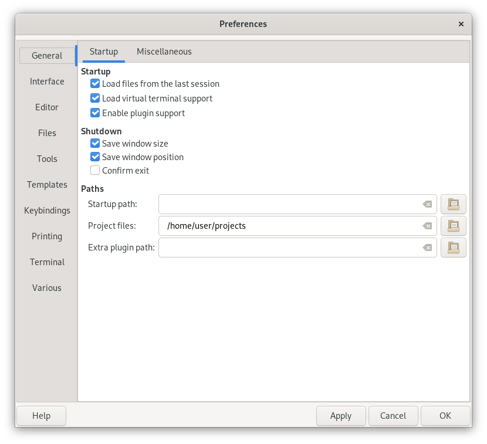Startup
- Load files from the last session
- On startup, load the same files you had open the last time you used Geany.
- Load virtual terminal support
- Load the library for running a terminal in the message window area.
- Enable plugin support
- Allow plugins to be used in Geany.
Shutdown
- Save window position and geometry
- Save the current position and size of the main window so next time you open Geany it's in the same location.
- Confirm Exit
- Have a dialog pop up to confirm that you really want to quit Geany.
Paths
- Startup path
- Path to start in when opening or saving files. It must be an absolute path.
- Project files
- Path to start in when opening project files.
- Extra plugin path
- By default Geany looks in the system installation and the user configuration - see Plugins. In addition the path entered here will be searched. Usually you do not need to set an additional path to search for plugins. It might be useful when Geany is installed on a multi-user machine and additional plugins are available in a common location for all users. Leave blank to not set an additional lookup path.
General Miscellaneous preferences
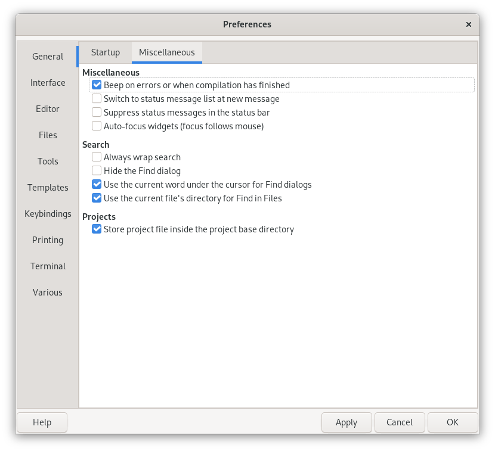Miscellaneous
- Beep on errors when compilation has finished
- Have the computer make a beeping sound when compilation of your program has completed or any errors occurred.
- Switch status message list at new message
- Switch to the status message tab (in the notebook window at the bottom) once a new status message arrives.
- Suppress status messages in the status bar
Remove all messages from the status bar. The messages are still displayed in the status messages window.
Tip
Another option is to use the Switch to Editor keybinding - it reshows the document statistics on the status bar. See Focus keybindings.
- Use Windows File Open/Save dialogs
- Defines whether to use the native Windows File Open/Save dialogs or whether to use the GTK default dialogs.
- Auto-focus widgets (focus follows mouse)
- Give the focus automatically to widgets below the mouse cursor. This works for the main editor widget, the scribble, the toolbar search field goto line fields and the VTE.
Search
- Always wrap search and hide the Find dialog
- Always wrap search around the document and hide the Find dialog after clicking Find Next/Previous.
- Use the current word under the cursor for Find dialogs
- Use current word under the cursor when opening the Find, Find in Files or Replace dialog and there is no selection. When this option is disabled, the search term last used in the appropriate Find dialog is used.
- Use the current file's directory for Find in Files
- When opening the Find in Files dialog, set the directory to search to the directory of the current active file. When this option is disabled, the directory of the last use of the Find in Files dialog is used.
Projects
- Use project-based session files
- Save your current session when closing projects. You will be able to resume different project sessions, automatically opening the files you had open previously.
- Store project file inside the project base directory
- When creating new projects, the default path for the project file contains the project base path. Without this option enabled, the default project file path is one level above the project base path. In either case, you can easily set the final project file path in the New Project dialog. This option provides the more common defaults automatically for convenience.
Interface preferences
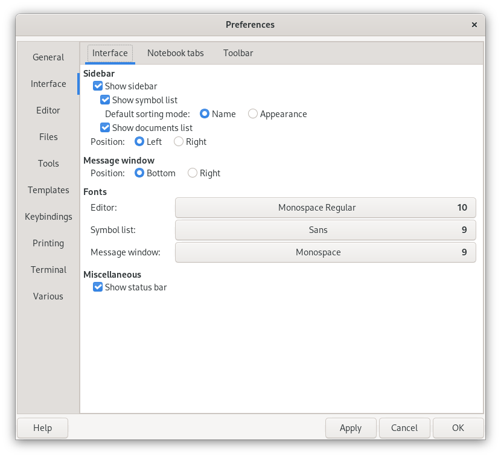Sidebar
- Show sidebar
- Whether to show the sidebar at all.
- Show symbol list
- Show the list of functions, variables, and other information in the current document you are editing.
- Show documents list
- Show all the documents you have open currently. This can be used to change between documents (see Switching between documents) and to perform some common operations such as saving, closing and reloading.
- Position
- Whether to place the sidebar on the left or right of the editor window.
Fonts
- Editor
- Change the font used to display documents.
- Symbol list
- Change the font used for the Symbols sidebar tab.
- Message window
- Change the font used for the message window area.
Miscellaneous
- Show status bar
- Show the status bar at the bottom of the main window. It gives information about the file you are editing like the line and column you are on, whether any modifications were done, the file encoding, the filetype and other information.
Interface Notebook tab preferences
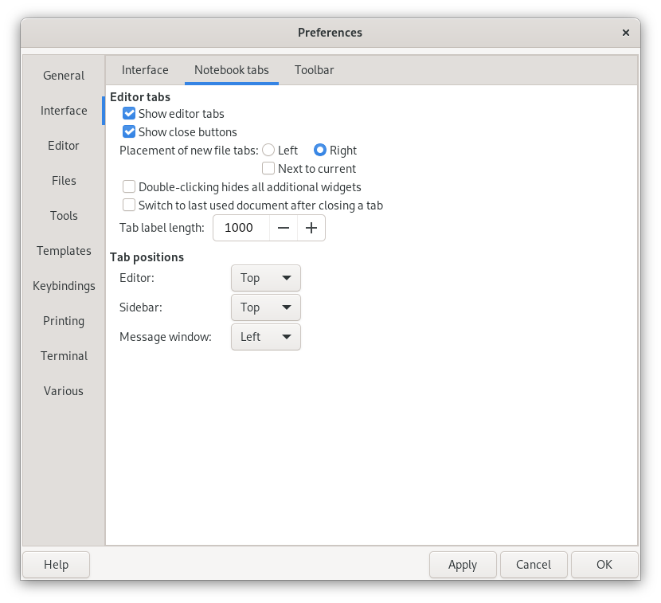Editor tabs
- Show editor tabs
- Show a notebook tab for all documents so you can switch between them using the mouse (instead of using the Documents window).
- Show close buttons
- Make each tab show a close button so you can easily close open documents.
- Placement of new file tabs
- Whether to create a document with its notebook tab to the left or right of all existing tabs.
- Next to current
- Whether to place file tabs next to the current tab rather than at the edges of the notebook.
- Double-clicking hides all additional widgets
- Whether to call the View->Toggle All Additional Widgets command when double-clicking on a notebook tab.
Tab positions
- Editor
- Set the positioning of the editor's notebook tabs to the right, left, top, or bottom of the editing window.
- Sidebar
- Set the positioning of the sidebar's notebook tabs to the right, left, top, or bottom of the sidebar window.
- Message window
- Set the positioning of the message window's notebook tabs to the right, left, top, or bottom of the message window.
Interface Toolbar preferences
Affects the main toolbar underneath the menu bar.
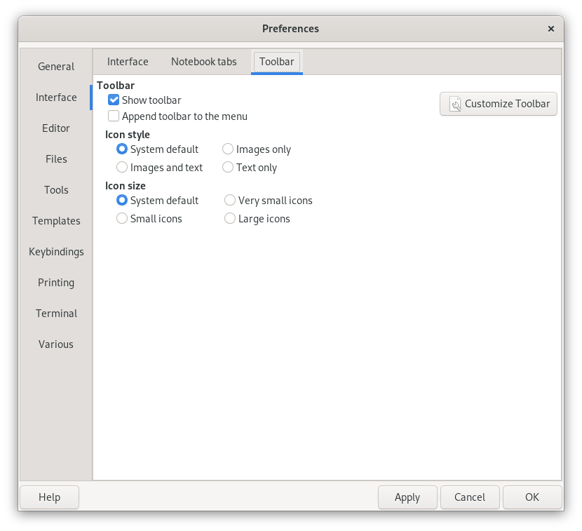Toolbar
- Show Toolbar
- Whether to show the toolbar.
- Append Toolbar to the Menu
- Allows to append the toolbar to the main menu bar instead of placing it below. This is useful to save vertical space.
- Customize Toolbar
- See Customizing the toolbar.
Appearance
- Icon Style
- Select the toolbar icon style to use - either icons and text, just icons or just text. The choice System default uses whatever icon style is set by GTK.
- Icon size
- Select the size of the icons you see (large, small or very small). The choice System default uses whatever icon size is set by GTK.
Editor Features preferences
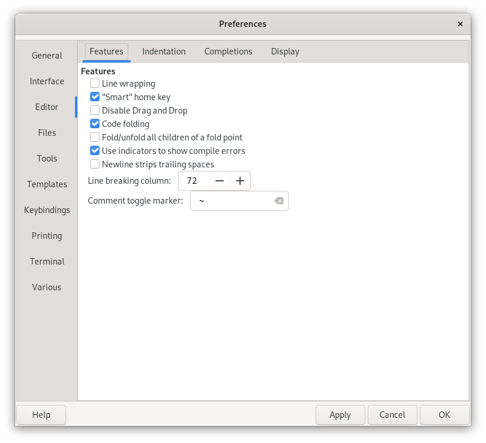Features
- Line wrapping
- Show long lines wrapped around to new display lines.
- "Smart" home key
- Whether to move the cursor to the first non-whitespace character on the line when you hit the home key on your keyboard. Pressing it again will go to the very start of the line.
- Disable Drag and Drop
- Do not allow the dragging and dropping of selected text in documents.
- Code folding
- Allow groups of lines in a document to be collapsed for easier navigation/editing.
- Fold/Unfold all children of a fold point
- Whether to fold/unfold all child fold points when a parent line is folded.
- Use indicators to show compile errors
- Underline lines with compile errors using red squiggles to indicate them in the editor area.
- Newline strip trailing spaces
- Remove any white space at the end of the line when you hit the Enter/Return key.
- Line breaking column
- The editor column number to insert a newline at when Line Breaking is enabled for the current document.
- Comment toggle marker
- A string which is added when toggling a line comment in a source file. It is used to mark the comment as toggled.
Editor Indentation preferences
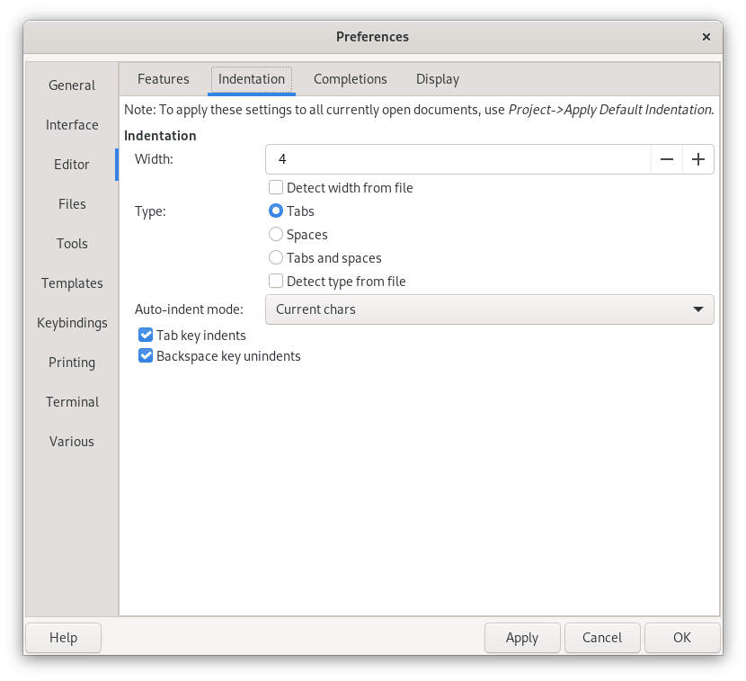Indentation group
See Indentation for more information.
- Width
- The width of a single indent size in spaces. By default the indent size is equivalent to 4 spaces.
- Detect width from file
- Try to detect and set the indent width based on file content, when a file is opened.
- Type
When Geany inserts indentation, whether to use:
- Just Tabs
- Just Spaces
- Tabs and Spaces, depending on how much indentation is on a line
The Tabs and Spaces indent type is also known as Soft tab support in some other editors.
- Detect type from file
- Try to detect and set the indent type based on file content, when a file is opened.
- Auto-indent mode
The type of auto-indentation you wish to use after pressing Enter, if any.
- Basic
- Just add the indentation of the previous line.
- Current chars
- Add indentation based on the current filetype and any characters at the end of the line such as {, } for C, : for Python.
- Match braces
- Like Current chars but for C-like languages, make a closing } brace line up with the matching opening brace.
- Tab key indents
If set, pressing tab will indent the current line or selection, and unindent when pressing Shift-tab. Otherwise, the tab key will insert a tab character into the document (which can be different from indentation, depending on the indent type).
Note
There are also separate configurable keybindings for indent & unindent, but this preference allows the tab key to have different meanings in different contexts - e.g. for snippet completion.
Editor Completions preferences
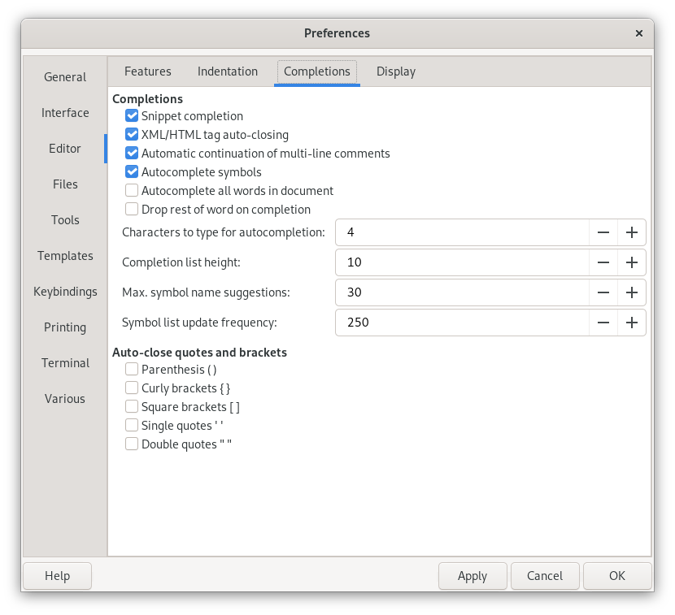Completions
- Snippet Completion
- Whether to replace special keywords after typing Tab into a pre-defined text snippet. See User-definable snippets.
- XML/HTML tag auto-closing
- When you open an XML/HTML tag automatically generate its completion tag.
- Automatic continuation multi-line comments
Continue automatically multi-line comments in languages like C, C++ and Java when a new line is entered inside such a comment. With this option enabled, Geany will insert a * on every new line inside a multi-line comment, for example when you press return in the following C code:
/* * This is a C multi-line comment, press <Return>
then Geany would insert:
*
on the next line with the correct indentation based on the previous line, as long as the multi-line is not closed by */.
- Autocomplete symbols
- When you start to type a symbol name, look for the full string to allow it to be completed for you.
- Autocomplete all words in document
- When you start to type a word, Geany will search the whole document for words starting with the typed part to complete it, assuming there are no tag names to show.
- Drop rest of word on completion
- Remove any word part to the right of the cursor when choosing a completion list item.
- Characters to type for autocompletion
- Number of characters of a word to type before autocompletion is displayed.
- Completion list height
- The number of rows to display for the autocompletion window.
- Max. symbol name suggestions
- The maximum number of items in the autocompletion list.
- Symbol list update frequency
The minimum delay (in milliseconds) between two symbol list updates.
This option determines how frequently the tag list is updated for the current document. The smaller the delay, the more up-to-date the symbol list (and then the completions); but rebuilding the symbol list has a cost in performance, especially with large files.
The default value is 250ms, which means the symbol list will be updated at most four times per second, even if the document changes continuously.
A value of 0 disables automatic updates, so the symbol list will only be updated upon document saving.
Auto-close quotes and brackets
Geany can automatically insert a closing bracket and quote characters when you open them. For instance, you type a ( and Geany will automatically insert ). With the following options, you can define for which characters this should work.
- Parenthesis ( )
- Auto-close parenthesis when typing an opening one
- Curly brackets { }
- Auto-close curly brackets (braces) when typing an opening one
- Square brackets [ ]
- Auto-close square brackets when typing an opening one
- Single quotes ' '
- Auto-close single quotes when typing an opening one
- Double quotes " "
- Auto-close double quotes when typing an opening one
Editor Display preferences
This is for visual elements displayed in the editor window.
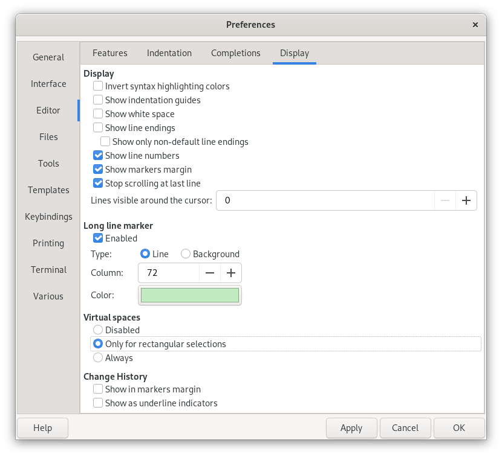Display
- Invert syntax highlighting colors
- Invert all colors, by default this makes white text on a black background.
- Show indendation guides
- Show vertical lines to help show how much leading indentation there is on each line.
- Show whitespaces
- Mark all tabs with an arrow "-->" symbol and spaces with dots to show which kinds of whitespace are used.
- Show line endings
- Display a symbol everywhere that a carriage return or line feed is present.
- Show line numbers
- Show or hide the Line Number margin.
- Show markers margin
- Show or hide the small margin right of the line numbers, which is used to mark lines.
- Stop scrolling at last line
- When enabled Geany stops scrolling when at the last line of the document. Otherwise you can scroll one more page even if there are no real lines.
Long line marker
The long line marker helps to indicate overly-long lines, or as a hint to the user for when to break the line.
- Type
- Line
- Show a thin vertical line in the editor window at the given column position.
- Background
- Change the background color of characters after the given column position to the color set below. (This is recommended over the Line setting if you use proportional fonts).
- Disabled
- Don't mark long lines at all.
- Long line marker
- Set this value to a value greater than zero to specify the column where it should appear.
- Long line marker color
- Set the color of the long line marker.
Virtual spaces
Virtual space is space beyond the end of each line. The cursor may be moved into virtual space but no real space will be added to the document until there is some text typed or some other text insertion command is used.
- Disabled
- Do not show virtual spaces
- Only for rectangular selections
- Only show virtual spaces beyond the end of lines when drawing a rectangular selection
- Always
- Always show virtual spaces beyond the end of lines
Files preferences
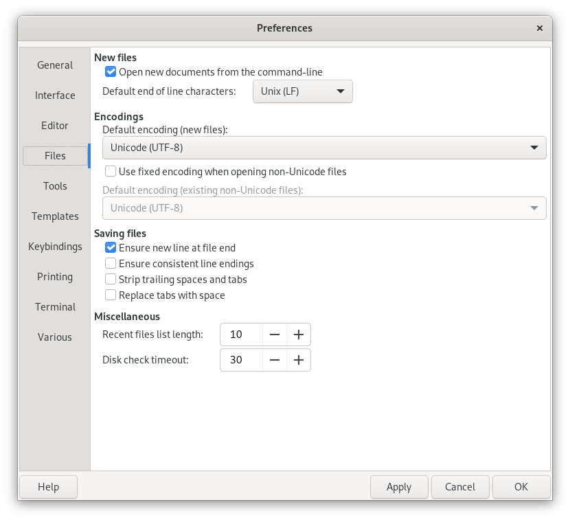New files
- Open new documents from the command-line
- Whether to create new documents when passing filenames that don't exist from the command-line.
- Default encoding (new files)
- The type of file encoding you wish to use when creating files.
- Used fixed encoding when opening files
- Assume all files you are opening are using the type of encoding specified below.
- Default encoding (existing files)
- Opens all files with the specified encoding instead of auto-detecting it. Use this option when it's not possible for Geany to detect the exact encoding.
- Default end of line characters
- The end of line characters to which should be used for new files. On Windows systems, you generally want to use CR/LF which are the common characters to mark line breaks. On Unix-like systems, LF is default and CR is used on MAC systems.
Saving files
Perform formatting operations when a document is saved. These can each be undone with the Undo command.
- Ensure newline at file end
- Add a newline at the end of the document if one is missing.
- Ensure consistent line endings
- Ensures that newline characters always get converted before saving, avoiding mixed line endings in the same file.
- Strip trailing spaces
- Remove the trailing spaces on each line of the document.
- Replace tabs by space
Replace all tabs in the document with the equivalent number of spaces.
Note
It is better to use spaces to indent than use this preference - see Indentation.
Miscellaneous
- Recent files list length
- The number of files to remember in the recently used files list.
- Disk check timeout
The number of seconds to periodically check the current document's file on disk in case it has changed. Setting it to 0 will disable this feature.
Note
These checks are only performed on local files. Remote files are not checked for changes due to performance issues (remote files are files in ~/.gvfs/).
Tools preferences

Tool paths
- Terminal
- The location of your terminal executable.
- Browser
- The location of your web browser executable.
- Grep
- The location of the grep executable.
Note
For Windows users: at the time of writing it is recommended to use the grep.exe from the UnxUtils project (http://sourceforge.net/projects/unxutils). The grep.exe from the Mingw project for instance might not work with Geany at the moment.
Commands
- Context action
- Set this to a command to execute on the current word. You can use the "%s" wildcard to pass the current word below the cursor to the specified command.
Template preferences
This data is used as meta data for various template text to insert into a document, such as the file header. You only need to set fields that you want to use in your template files.

Template data
- Developer
- The name of the developer who will be creating files.
- Initials
- The initials of the developer.
- Mail address
The email address of the developer.
Note
You may wish to add anti-spam markup, e.g. name<at>site<dot>ext.
- Company
- The company the developer is working for.
- Initial version
- The initial version of files you will be creating.
- Year
- Specify a format for the the {year} wildcard. You can use any conversion specifiers which can be used with the ANSI C strftime function. For details please see http://man.cx/strftime.
- Date
- Specify a format for the the {date} wildcard. You can use any conversion specifiers which can be used with the ANSI C strftime function. For details please see http://man.cx/strftime.
- Date & Time
- Specify a format for the the {datetime} wildcard. You can use any conversion specifiers which can be used with the ANSI C strftime function. For details please see http://man.cx/strftime.
Keybinding preferences

There are some commands listed in the keybinding dialog that are not, by default, bound to a key combination, and may not be available as a menu item.
Note
For more information see the section Keybindings.
Printing preferences
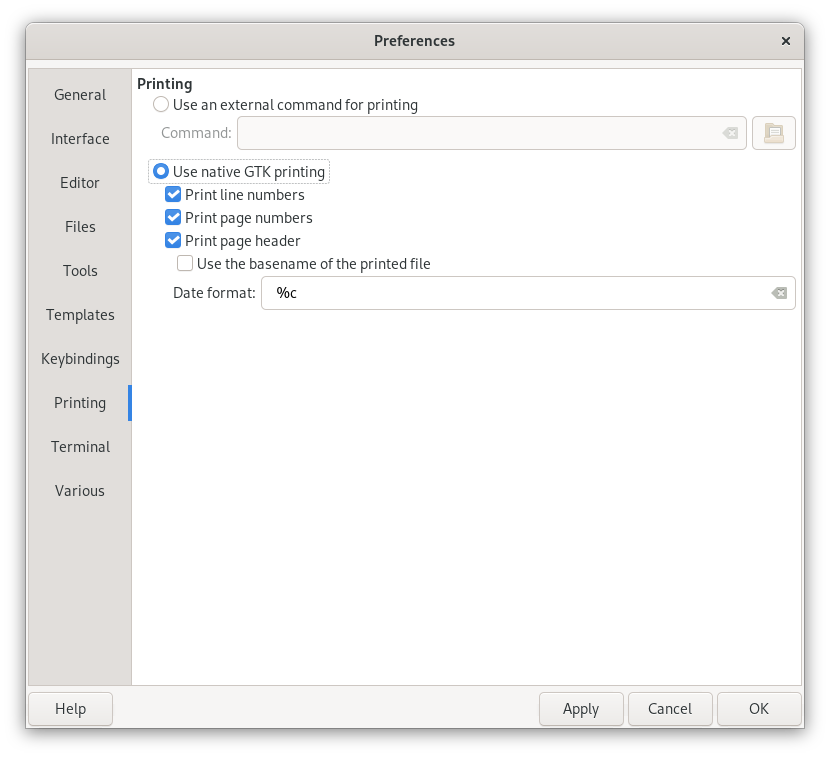- Use external command for printing
- Use a system command to print your file out.
- Use native GTK printing
- Let the GTK GUI toolkit handle your print request.
- Print line numbers
- Print the line numbers on the left of your paper.
- Print page number
- Print the page number on the bottom right of your paper.
- Print page header
- Print a header on every page that is sent to the printer.
- Use base name of the printed file
- Don't use the entire path for the header, only the filename.
- Date format
- How the date should be printed. You can use the same format specifiers as in the ANSI C function strftime(). For details please see http://man.cx/strftime.
Various preferences
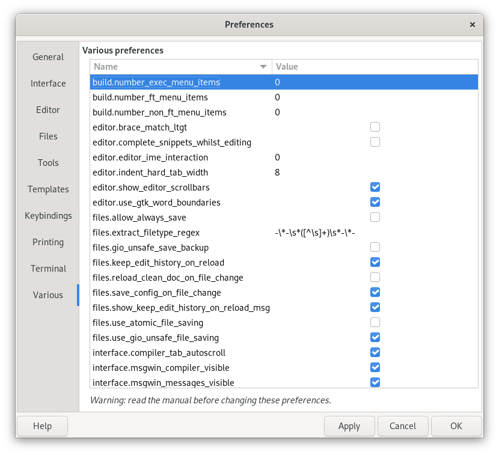Rarely used preferences, explained in the table below. A few of them require restart to take effect, and a few other will only affect newly opened or created documents before restart.
| Key | Description | Default | Applies |
|---|---|---|---|
| Editor related | |||
| use_gtk_word_boundaries | Whether to look for the end of a word when using word-boundary related Scintilla commands (see Scintilla keyboard commands). | true | to new documents |
| brace_match_ltgt | Whether to highlight <, > angle brackets. | false | immediately |
| complete_snippets_whilst_editing | Whether to allow completion of snippets when editing an existing line (i.e. there is some text after the current cursor position on the line). Only used when the keybinding Complete snippet is set to Space. | false | immediately |
| show_editor_scrollbars | Whether to display scrollbars. If set to false, the horizontal and vertical scrollbars are hidden completely. | true | immediately |
| indent_hard_tab_width | The size of a tab character. Don't change it unless you really need to; use the indentation settings instead. | 8 | immediately |
| Interface related | |||
| show_symbol_list_expanders | Whether to show or hide the small expander icons on the symbol list | true | to new documents |
| allow_always_save | treeview. Whether files can be saved always, even if they don't have any changes. By default, the Save button and menu item are disabled when a file is unchanged. When setting this option to true, the Save button and menu item are always active and files can be saved. | false | immediately |
| compiler_tab_autoscroll | Whether to automatically scroll to the last line of the output in the Compiler tab. | true | immediately |
| statusbar_template | The status bar statistics line format. (Search in src/ui_utils.c for details). | See below. | immediately |
| new_document_after_close | Whether to open a new document after all documents have been closed. | false | immediately |
| msgwin_status_visible | Whether to show the Status tab in the Messages Window | true | immediately |
| msgwin_compiler_visible | Whether to show the Compiler tab in the Messages Window | true | immediately |
| msgwin_messages_visible | Whether to show the Messages tab in the Messages Window | true | immediately |
| msgwin_scribble_visible | Whether to show the Scribble tab in the Messages Window | true | immediately |
By default, statusbar_template is empty. This tells Geany to use its internal default, which is currently:
line: %l / %L\t col: %c\t sel: %s\t %w %t %mmode: %M encoding: %e filetype: %f scope: %S
Note that \t = tab.
| Key | Description | Default | Applies |
|---|---|---|---|
| VTE related | |||
| emulation | Terminal emulation mode. Only change this if you have VTE termcap files other than vte/termcap/xterm. | xterm | immediately |
| send_selection_unsafe | By default, Geany strips any trailing newline characters from the current selection before sending it to the terminal to not execute arbitrary code. This is mainly a security feature. If, for whatever reasons, you really want it to be executed directly, set this option to true. | false | immediately |
| send_cmd_prefix | String with which prefix the commands sent to the shell. This may be used to tell some shells (BASH with HISTCONTROL set to ignorespace, ZSH with HIST_IGNORE_SPACE enabled, etc.) from putting these commands in their history by setting this to a space. Note that leading spaces must be escaped using s in the configuration file. | Empty | immediately |
| File related | |||
| use_atomic_file_saving | Defines the mode how Geany saves files to disk. If disabled, Geany directly writes the content of the document to disk. This might cause loss of data when there is no more free space on disk to save the file. When set to true, Geany first saves the contents into a temporary file and if this succeeded, the temporary file is moved to the real file to save. This gives better error checking in case of no more free disk space. But it also destroys hard links of the original file and its permissions (e.g. executable flags are reset). Use this with care as it can break things seriously. The better approach would be to ensure your disk won't run out of free space. | false | immediately |
| use_gio_unsafe_file_saving | Whether to use GIO as the unsafe file saving backend. It is better on most situations but is known not to work correctly on some complex setups. | true | immediately |
| gio_unsafe_save_backup | Make a backup when using GIO unsafe file saving. Backup is named filename~. | false | immediately |
| Filetype related | |||
| extract_filetype_regex | Regex to extract filetype name from file via capture group one. | See below. | immediately |
| Search related | |||
| find_selection_type | See Find selection. | 0 | immediately |
| Build Menu related | |||
| number_ft_menu_items | The maximum number of menu items in the filetype section of the Build menu. | 2 | on restart |
| number_non_ft_menu_items | The maximum number of menu items in the independent section of the Build menu. | 3 | on restart |
| number_exec_menu_items | The maximum number of menu items in the execute section of the Build menu. | 2 | on restart |
The extract_filetype_regex has the default value GEANY_DEFAULT_FILETYPE_REGEX.
Terminal (VTE) preferences
See also: Virtual terminal emulator widget (VTE).

Terminal widget
- Terminal font
- Select the font that will be used in the terminal emulation control.
- Foreground color
- Select the font color.
- Background color
- Select the background color of the terminal.
- Scrollback lines
- The number of lines buffered so that you can scroll though the history.
- Shell
- The location of the shell on your system.
- Scroll on keystroke
- Scroll the terminal to the prompt line when pressing a key.
- Scroll on output
- Scroll the output down.
- Cursor blinks
- Let the terminal cursor blink.
- Override Geany keybindings
- Allow the VTE to receive keyboard shortcuts (apart from focus commands).
- Disable menu shortcut key (F10 by default)
- Disable the menu shortcut when you are in the virtual terminal.
- Follow path of the current file
- Make the path of the terminal change according to the path of the current file.
- Execute programs in VTE
- Execute programs in the virtual terminal instead of using the external terminal tool. Note that if you run multiple execute commands at once the output may become mixed together in the VTE.
- Don't use run script
- Don't use the simple run script which is usually used to display the exit status of the executed program. This can be useful if you already have a program running in the VTE like a Python console (e.g. ipython). Use this with care.
Project management
Project management is optional in Geany. Currently it can be used for:
- Storing and opening session files on a project basis.
- Overriding default settings with project equivalents.
- Configuring the Build menu on a project basis.
A list of session files can be stored and opened with the project when the Use project-based session files preference is enabled, in the Project group of the Preferences dialog.
As long as a project is open, the Build menu will use the items defined in project's settings, instead of the defaults. See Build Menu Configuration for information on configuring the menu.
The current project's settings are saved when it is closed, or when Geany is shutdown. When restarting Geany, the previously opened project file that was in use at the end of the last session will be reopened.
The project menu items are detailed below.
New project
To create a new project, fill in the Name field. By default this will setup a new project file ~/projects/name.geany. Usually it's best to store all your project files in the same directory (they are independent of any source directory trees).
The Base path text field is setup to use ~/projects/name. This can safely be set to any existing path -- it will not touch the file structure contained in it.
Project properties
You can set an optional description for the project. Currently it's only used for a template wildcard - see Template wildcards.
The Base path field is used as the directory to run the Build menu commands. The specified path can be an absolute path or it is considered to be relative to the project's file name.
The File patterns field allows to specify a list of file patterns for the project, which can be used in the Find in files dialog.
The Indentation tab allows you to override the default Indentation settings.
Open project
The Open command displays a standard file chooser, starting in ~/projects. Choose a project file named with the .geany extension.
When project session support is enabled, Geany will close the currently open files and open the session files associated with the project.
Close project
Project file settings are saved when the project is closed.
When project session support is enabled, Geany will close the project session files and open any previously closed default session files.
Printing support
Since Geany 0.13 there has been printing support using GTK's printing API. The printed page(s) will look nearly the same as on your screen in Geany. Additionally, there are some options to modify the printed page(s).
Note
The background text color is set to white, except for text with a white foreground. This allows dark color schemes to save ink when printing.
You can define whether to print line numbers, page numbers at the bottom of each page and whether to print a page header on each page. This header contains the filename of the printed document, the current page number and the date and time of printing. By default, the file name of the document with full path information is added to the header. If you prefer to add only the basename of the file(without any path information) you can set it in the preferences dialog. You can also adjust the format of the date and time added to the page header. The available conversion specifiers are the same as the ones which can be used with the ANSI C strftime function.
All of these settings can also be changed in the print dialog just before actual printing is done. On Unix-like systems the provided print dialog offers a print preview. The preview file is opened with a PDF viewer and by default GTK uses evince for print preview. If you have not installed evince or just want to use another PDF viewer, you can change the program to use in the file .gtkrc-2.0 (usually found in your home directory). Simply add a line like:
gtk-print-preview-command = "epdfview %f"
at the end of the file. Of course, you can also use xpdf, kpdf or whatever as the print preview command.
Geany also provides an alternative basic printing support using a custom print command. However, the printed document contains no syntax highlighting. You can adjust the command to which the filename is passed in the preferences dialog. The default command is:
% lpr %f
%f will be substituted by the filename of the current file. Geany will not show errors from the command itself, so you should make sure that it works before(e.g. by trying to execute it from the command line).
A nicer example, which many prefer is:
% a2ps -1 --medium=A4 -o - %f | xfprint4
But this depends on a2ps and xfprint4. As a replacement for xfprint4, gtklp or similar programs can be used.
Plugins
Plugins are loaded at startup, if the Enable plugin support general preference is set. There is also a command-line option, -p, which prevents plugins being loaded. Plugins are scanned in the following directories:
- $prefix/lib/geany on Unix-like systems (see Installation prefix)
- The lib subfolder of the installation path on Windows.
- The plugins subfolder of the user configuration directory - see Configuration file paths.
- The Extra plugin path preference (usually blank) - see Paths.
Most plugins add menu items to the Tools menu when they are loaded.
See also Plugin documentation for information about single plugins which are included in Geany.
Plugin manager
The Plugin Manager dialog lets you choose which plugins should be loaded at startup. You can also load and unload plugins on the fly using this dialog. Once you click the checkbox for a specific plugin in the dialog, it is loaded or unloaded according to its previous state. By default, no plugins are loaded at startup until you select some. You can also configure some plugin specific options if the plugin provides any.
Keybindings
Geany supports the default keyboard shortcuts for the Scintilla editing widget. For a list of these commands, see Scintilla keyboard commands. The Scintilla keyboard shortcuts will be overridden by any custom keybindings with the same keyboard shortcut.
Switching documents
There are some non-configurable bindings to switch between documents, listed below. These can also be overridden by custom keybindings.
| Key | Action |
|---|---|
| Alt-[1-9] | Select left-most tab, from 1 to 9. |
| Alt-0 | Select right-most tab. |
See also Notebook tab keybindings.
Configurable keybindings
For all actions listed below you can define your own keybindings. Open the Preferences dialog, select the desired action and click on change. In the resulting dialog you can press the key combination you want to assign to the action and it will be saved when you press OK. You can define only one key combination for each action and each key combination can only be defined for one action.
Some of the default key combinations are common across many applications, for example Ctrl-N for New and Ctrl-O for Open. Because they are so common it is not advisable to change these, but you can add other key combinations for these actions. For example Ctrl-O is set to execute menu_open by default, but you can also define Alt-O, so that the file open dialog is shown by pressing either Ctrl-O or Alt-O.
The following tables list all customizable keyboard shortcuts, those which are common to many applications are marked with (C) after the shortcut.
File keybindings
| Action | Default shortcut | Description |
|---|---|---|
| New | Ctrl-N (C) | Creates a new file. |
| Open | Ctrl-O (C) | Opens a file. |
| Open selected file | Ctrl-Shift-O | Opens the selected filename. |
| Re-open last closed tab | Re-opens the last closed document tab. | |
| Save | Ctrl-S (C) | Saves the current file. |
| Save As | Saves the current file under a new name. | |
| Save all | Ctrl-Shift-S | Saves all open files. |
| Close all | Ctrl-Shift-W | Closes all open files. |
| Close | Ctrl-W (C) | Closes the current file. |
| Reload file | Ctrl-R (C) | Reloads the current file. All unsaved changes will be lost. |
| Ctrl-P (C) | Prints the current file. |
Editor keybindings
| Action | Default shortcut | Description |
|---|---|---|
| Undo | Ctrl-Z (C) | Un-does the last action. |
| Redo | Ctrl-Y | Re-does the last action. |
| Delete current line(s) | Ctrl-K | Deletes the current line (and any lines with a selection). |
| Delete to line end | Ctrl-Shift-Delete | Deletes from the current caret position to the end of the current line. |
| Duplicate line or selection | Ctrl-D | Duplicates the current line or selection. |
| Transpose current line | Transposes the current line with the previous one. | |
| Scroll to current line | Ctrl-Shift-L | Scrolls the current line into the centre of the view. The cursor position and or an existing selection will not be changed. |
| Scroll up by one line | Alt-Up | Scrolls the view. |
| Scroll down by one line | Alt-Down | Scrolls the view. |
| Complete word | Ctrl-Space | Shows the autocompletion list. If already showing tag completion, it shows document word completion instead, even if it is not enabled for automatic completion. Likewise if no tag suggestions are available, it shows document word completion. |
| Show calltip | Ctrl-Shift-Space | Shows a calltip for the current function or method. |
| Show macro list | Ctrl-Return | Shows a list of available macros and variables in the workspace. |
| Complete snippet | Tab | If you type a construct like if or for and press this key, it will be completed with a matching template. |
| Suppress snippet completion | If you type a construct like if or for and press this key, it will not be completed, and a space or tab will be inserted, depending on what the construct completion keybinding is set to. For example, if you have set the construct completion keybinding to space, then setting this to Shift+space will prevent construct completion and insert a space. | |
| Context Action | Executes a command and passes the current word (near the cursor position) or selection as an argument. See the section called Context actions. | |
| Move cursor in snippet | Jumps to the next defined cursor positions in a completed snippets if multiple cursor positions where defined. | |
| Word part completion | Tab | When the autocompletion list is visible, complete the currently selected item up to the next word part. |
| Move line(s) up | Alt-PageUp | Move the current line or selected lines up by one line. |
| Move line(s) down | Alt-PageDown | Move the current line or selected lines down by one line. |
Clipboard keybindings
| Action | Default shortcut | Description |
|---|---|---|
| Cut | Ctrl-X (C) | Cut the current selection to the clipboard. |
| Copy | Ctrl-C (C) | Copy the current selection to the clipboard. |
| Paste | Ctrl-V (C) | Paste the clipboard text into the current document. |
| Cut current line(s) | Ctrl-Shift-X | Cuts the current line (and any lines with a selection) to the clipboard. |
| Copy current line(s) | Ctrl-Shift-C | Copies the current line (and any lines with a selection) to the clipboard. |
Select keybindings
| Action | Default shortcut | Description |
|---|---|---|
| Select all | Ctrl-A (C) | Makes a selection of all text in the current document. |
| Select current word | Alt-Shift-W | Selects the current word under the cursor. |
| Select current paragraph | Alt-Shift-P | Selects the current paragraph under the cursor which is defined by two empty lines around it. |
| Select current line(s) | Alt-Shift-L | Selects the current line under the cursor (and any partially selected lines). |
| Select to previous word part | (Extend) selection to previous word part boundary. | |
| Select to next word part | (Extend) selection to next word part boundary. |
Insert keybindings
| Action | Default shortcut | Description |
|---|---|---|
| Insert date | Shift-Alt-D | Inserts a customisable date. |
| Insert alternative whitespace | Inserts a tab character when spaces should be used for indentation and inserts space characters of the amount of a tab width when tabs should be used for indentation. | |
| Insert New Line Before Current | Inserts a new line with indentation. | |
| Insert New Line After Current | Inserts a new line with indentation. |
Format keybindings
| Action | Default shortcut | Description |
|---|---|---|
| Toggle case of selection | Ctrl-Alt-U | Changes the case of the selection. A lowercase selection will be changed into uppercase and vice versa. If the selection contains lower- and uppercase characters, all will be converted to lowercase. |
| Comment line | Comments current line or selection. | |
| Uncomment line | Uncomments current line or selection. | |
| Toggle line commentation | Ctrl-E | Comments a line if it is not commented or removes a comment if the line is commented. |
| Increase indent | Ctrl-I | Indents the current line or selection by one tab or by spaces in the amount of the tab width setting. |
| Decrease indent | Ctrl-U | Removes one tab or the amount of spaces of the tab width setting from the indentation of the current line or selection. |
| Increase indent by one space | Indents the current line or selection by one space. | |
| Decrease indent by one space | Deindents the current line or selection by one space. | |
| Smart line indent | Indents the current line or all selected lines with the same indentation as the previous line. | |
| Send to Custom Command 1 (2,3) | Ctrl-1 (2,3) | Passes the current selection to a configured external command (available for the first three configured commands, see Sending text through custom commands for details). |
| Send Selection to Terminal | Sends the current selection or the current line (if there is no selection) to the embedded Terminal (VTE). | |
| Reflow lines/block | Reformat selected lines or current (indented) text block, breaking lines at the long line marker or the line breaking column if line breaking is enabled for the current document. |
Settings keybindings
| Action | Default shortcut | Description |
|---|---|---|
| Preferences | Ctrl-Alt-P | Opens preferences dialog. |
| Plugin Preferences | Opens plugin preferences dialog. |
Search keybindings
| Action | Default shortcut | Description |
|---|---|---|
| Find | Ctrl-F (C) | Opens the Find dialog. |
| Find Next | Ctrl-G | Finds next result. |
| Find Previous | Ctrl-Shift-G | Finds previous result. |
| Find Next Selection | Finds next occurence of selected text. | |
| Find Previous Selection | Finds previous occurence of selected text. | |
| Replace | Ctrl-H (C) | Opens the Replace dialog. |
| Find in files | Ctrl-Shift-F | Opens the Find in files dialog. |
| Next message | Jumps to the line with the next message in the Messages window. | |
| Previous message | Jumps to the line with the previous message in the Messages window. | |
| Find Usage | Ctrl-Shift-E | Finds all occurrences of the current word (near the keyboard cursor) or selection in all open documents and displays them in the messages window. |
| Find Document Usage | Ctrl-Shift-D | Finds all occurrences of the current word (near the keyboard cursor) or selection in the current document and displays them in the messages window. |
| Mark All | Ctrl-Shift-M | Highlight all matches of the current word/selection in the current document with a colored box. If there's nothing to find, highlighted matches will be cleared. |
Go to keybindings
| Action | Default shortcut | Description |
|---|---|---|
| Navigate forward a location | Alt-Right (C) | Switches to the next location in the navigation history. See the section called Code Navigation History. |
| Navigate back a location | Alt-Left (C) | Switches to the previous location in the navigation history. See the section called Code navigation history. |
| Go to line | Ctrl-L | Focuses the Go to Line entry (if visible) or shows the Go to line dialog. |
| Goto matching brace | Ctrl-B | If the cursor is ahead or behind a brace, then it is moved to the brace which belongs to the current one. If this keyboard shortcut is pressed again, the cursor is moved back to the first brace. |
| Toggle marker | Ctrl-M | Set a marker on the current line, or clear the marker if there already is one. |
| Goto next marker | Ctrl-. | Goto the next marker in the current document. |
| Goto previous marker | Ctrl-, | Goto the previous marker in the current document. |
| Go to tag definition | Ctrl-T | Jump to the definition of the current word or selection. See Go to tag definition. |
| Go to tag declaration | Ctrl-Shift-T | Jump to the declaration of the current word or selection. See Go to tag declaration. |
| Go to Start of Line | Home | Move the caret to the end of the line indentation unless it is already there, in which case it moves it to the start of the line. |
| Go to End of Line | End | Move the caret to the end of the line. |
| Go to End of Display Line | Alt-End | Move the caret to the end of the display line. This is useful when you use line wrapping and want to jump to the end of the wrapped, virtual line, not the real end of the whole line. If the line is not wrapped, it behaves like Go to End of Line, see above. |
| Go to Previous Word Part | Ctrl-/ | Goto the previous part of the current word. |
| Go to Next Word Part | Ctrl- | Goto the next part of the current word. |
View keybindings
| Action | Default shortcut | Description |
|---|---|---|
| Fullscreen | F11 (C) | Switches to fullscreen mode. |
| Toggle Messages Window | Toggles the message window (status and compiler messages) on and off. | |
| Toggle Sidebar | Shows or hides the sidebar. | |
| Toggle all additional widgets | Hide and show all additional widgets like the notebook tabs, the toolbar, the messages window and the status bar. | |
| Zoom In | Ctrl-+ (C) | Zooms in the text. |
| Zoom Out | Ctrl-- (C) | Zooms out the text. |
| Zoom Reset | Ctrl-0 | Reset any previous zoom on the text. |
Focus keybindings
| Action | Default shortcut | Description |
|---|---|---|
| Switch to Editor | F2 | Switches to editor widget. Also reshows the document statistics line (after a short timeout). |
| Switch to Search Bar | F7 | Switches to the search bar in the toolbar (if visible). |
| Switch to Message Window | Focus the Message Window's current tab. | |
| Switch to Compiler | Focus the Compiler message window tab. | |
| Switch to Messages | Focus the Messages message window tab. | |
| Switch to Scribble | F6 | Switches to scribble widget. |
| Switch to VTE | F4 | Switches to VTE widget. |
| Switch to Sidebar | Focus the Sidebar. | |
| Switch to Sidebar Symbol List | Focus the Symbol list tab in the Sidebar (if visible). | |
| Switch to Sidebar Document List | Focus the Document list tab in the Sidebar (if visible). |
Notebook tab keybindings
| Action | Default shortcut | Description |
|---|---|---|
| Switch to left document | Ctrl-PageUp (C) | Switches to the previous open document. |
| Switch to right document | Ctrl-PageDown (C) | Switches to the next open document. |
| Switch to last used document | Ctrl-Tab | Switches to the previously shown document (if it's still open). Holding Ctrl (or another modifier if the keybinding has been changed) will show a dialog, then repeated presses of the keybinding will switch to the 2nd-last used document, 3rd-last, etc. Also known as Most-Recently-Used documents switching. |
| Move document left | Ctrl-Shift-PageUp | Changes the current document with the left hand one. |
| Move document right | Ctrl-Shift-PageDown | Changes the current document with the right hand one. |
| Move document first | Moves the current document to the first position. | |
| Move document last | Moves the current document to the last position. |
Document keybindings
| Action | Default shortcut | Description |
|---|---|---|
| Replace tabs by space | Replaces all tabs with the right amount of spaces. | |
| Replace spaces by tabs | Replaces leading spaces with tab characters. | |
| Toggle current fold | Toggles the folding state of the current code block. | |
| Fold all | Folds all contractible code blocks. | |
| Unfold all | Unfolds all contracted code blocks. | |
| Reload symbol list | Ctrl-Shift-R | Reloads the tag/symbol list. |
| Toggle Line wrapping | Enables or disables wrapping of long lines. | |
| Toggle Line breaking | Enables or disables automatic breaking of long lines at a configurable column. | |
| Remove Markers | Remove any markers on lines or words which were set by using 'Mark All' in the search dialog or by manually marking lines. | |
| Remove Error Indicators | Remove any error indicators in the current document. | |
| Remove Markers and Error Indicators | Combines Remove Markers and Remove Error Indicators. |
Project keybindings
| Action | Default shortcut | Description |
|---|---|---|
| New | Create a new project. | |
| Open | Opens a project file. | |
| Properties | Shows project properties. | |
| Close | Close the current project. |
Build keybindings
| Action | Default shortcut | Description |
|---|---|---|
| Compile | F8 | Compiles the current file. |
| Build | F9 | Builds (compiles if necessary and links) the current file. |
| Make all | Shift-F9 | Builds the current file with the Make tool. |
| Make custom target | Ctrl-Shift-F9 | Builds the current file with the Make tool and a given target. |
| Make object | Shift-F8 | Compiles the current file with the Make tool. |
| Next error | Jumps to the line with the next error from the last build process. | |
| Previous error | Jumps to the line with the previous error from the last build process. | |
| Run | F5 | Executes the current file in a terminal emulation. |
| Set Build Commands | Opens the build commands dialog. |
Tools keybindings
| Action | Default shortcut | Description |
|---|---|---|
| Show Color Chooser | Opens the Color Chooser dialog. |
Help keybindings
| Action | Default shortcut | Description |
|---|---|---|
| Help | F1 (C) | Opens the manual. |
Configuration files
Warning
You must use UTF-8 encoding without BOM for configuration files.
Configuration file paths
Geany has default configuration files installed for the system and also per-user configuration files.
The system files should not normally be edited because they will be overwritten when upgrading Geany.
The user configuration directory can be overridden with the -c switch, but this is not normally done. See Command line options.
Note
Any missing subdirectories in the user configuration directory will be created when Geany starts.
You can check the paths Geany is using with Help->Debug Messages. Near the top there should be 2 lines with something like:
Geany-INFO: System data dir: /usr/share/geany Geany-INFO: User config dir: /home/username/.config/geany
Paths on Unix-like systems
The system path is $prefix/share/geany, where $prefix is the path where Geany is installed (see Installation prefix).
The user configuration directory is normally: /home/username/.config/geany
Paths on Windows
The system path is the data subfolder of the installation path on Windows.
The user configuration directory might vary, but on Windows XP it's: C:\Documents and Settings\UserName\Application Data\geany
Global configuration file
System administrators can add a global configuration file for Geany which will be used when starting Geany and a user configuration file does not exist.
The global configuration file is read from geany.conf in the system configuration path - see Configuration file paths. It can contain any settings which are found in the usual configuration file created by Geany, but does not have to contain all settings.
Note
This feature is mainly intended for package maintainers or system admins who want to set up Geany in a multi user environment and set some sane default values for this environment. Usually users won't need to do that.
Filetype definition files
All color definitions and other filetype specific settings are stored in the filetype definition files. Those settings are colors for syntax highlighting, general settings like comment characters or word delimiter characters as well as compiler and linker settings.
See also Configuration file paths.
Filenames
Each filetype has a corresponding filetype definition file. The format for built-in filetype Foo is:
filetypes.foo
The extension is normally just the filetype name in lower case.
However there are some exceptions:
| Filetype | Extension |
|---|---|
| C++ | cpp |
| C# | cs |
| Make | makefile |
| Matlab/Octave | matlab |
There is also the special file filetypes.common.
For custom filetypes, the filename for Foo is different:
filetypes.Foo.conf
See the link for details.
System files
The system-wide filetype configuration files can be found in the system configuration path and are called filetypes.$ext, where $ext is the name of the filetype. For every filetype there is a corresponding definition file. There is one exception: filetypes.common -- this file is for general settings, which are not specific to a certain filetype.
Warning
It is not recommended that users edit the system-wide files, because they will be overridden when Geany is updated.
User files
To change the settings, copy a file from the system configuration path to the subdirectory filedefs in your user configuration directory. Then you can edit the file and the changes will still be available after an update of Geany.
Alternatively, you can create the file yourself and add only the settings you want to change. All missing settings will be read from the corresponding system configuration file.
Custom filetypes
At startup Geany looks for filetypes.*.conf files in the system and user filetype paths, adding any filetypes found with the name matching the '*' wildcard - e.g. filetypes.Bar.conf.
Custom filetypes are not as powerful as built-in filetypes, but support for the following has been implemented:
Recognizing and setting the filetype (after the user has manually edited filetype_extensions.conf).
- Reading filetype settings in the [settings] section, including:
- Using an existing syntax highlighting lexer (lexer_filetype key).
- Using an existing tag parser (tag_parser key).
Build commands ([build-menu] section).
Loading global tags files (sharing the tag_parser namespace).
See Filetype configuration for details on each setting.
Creating a custom filetype from an existing filetype
Because most filetype settings will relate to the syntax highlighting (e.g. styling, keywords, lexer_properties sections), it is best to copy an existing filetype file that uses the lexer you wish to use as the basis of a custom filetype, using the correct filename extension format shown above, e.g.:
cp filetypes.foo filetypes.Bar.conf
Then add the lexer_filetype=Foo setting (if not already present) and add/adjust other settings.
Warning
The [styling] and [keywords] sections have key names specific to each filetype/lexer. You must follow the same names - in particular, some lexers only support one keyword list, or none.
Filetype configuration
As well as the sections listed below, each filetype file can contain a [build-menu] section as described in [build-menu] section.
[styling] section
In this section the colors for syntax highlighting are defined. The manual format is:
- key=foreground_color;background_color;bold_flag;italic_flag
Colors have to be specified as RGB hex values prefixed by 0x or # similar to HTML/CSS hex triplets. For example, all of the following are valid values for pure red; 0xff0000, 0xf00, #ff0000, or #f00. The values are case-insensitive but it is a good idea to use lower-case. Note that you can also use named colors as well by substituting the color value with the name of a color as defined in the [named_colors] section, see the [named_colors] Section for more information.
Bold and italic are flags and should only be "true" or "false". If their value is something other than "true" or "false", "false" is assumed.
You can omit fields to use the values from the style named "default".
E.g. key=0xff0000;;true
This makes the key style have red foreground text, default background color text and bold emphasis.
Using a named style
The second format uses a named style name to reference a style defined in filetypes.common.
- key=named_style
- key2=named_style2,bold,italic
The bold and italic parts are optional, and if present are used to toggle the bold or italic flags to the opposite of the named style's flags. In contrast to style definition booleans, they are a literal ",bold,italic" and commas are used instead of semi-colons.
E.g. key=comment,italic
This makes the key style match the "comment" named style, but with italic emphasis.
To define named styles, see the filetypes.common [named_styles] Section.
Reading styles from another filetype
You can automatically copy all of the styles from another filetype definition file by using the following syntax for the [styling] group:
[styling=Foo]
Where Foo is a filetype name. The corresponding [styling] section from filetypes.foo will be read.
This is useful when the same lexer is being used for multiple filetypes (e.g. C/C++/C#/Java/etc). For example, to make the C++ styling the same as the C styling, you would put the following in filetypes.cpp:
[styling=C]
[keywords] section
This section contains keys for different keyword lists specific to the filetype. Some filetypes do not support keywords, so adding a new key will not work. You can only add or remove keywords to/from an existing list.
Important
The keywords list must be in one line without line ending characters.
[lexer_properties] section
Here any special properties for the Scintilla lexer can be set in the format key.name.field=some.value.
Properties Geany uses are listed in the system filetype files. To find other properties you need Geany's source code:
egrep -o 'GetProperty\w*\("([^"]+)"[^)]+\)' scintilla/Lex*.cxx
[settings] section
- extension
This is the default file extension used when saving files, not including the period character (.). The extension used should match one of the patterns associated with that filetype (see Filetype extensions).
Example: extension=cxx
- wordchars
These characters define word boundaries when making selections and searching using word matching options.
Example: (look at system filetypes.* files)
Note
This can be overridden by the whitespace_chars filetypes.common setting.
- comment_single
A character or string which is used to comment code. If you want to use multiline comments only, don't set this but rather comment_open and comment_close.
Single-line comments are used in priority over multiline comments to comment a line, e.g. with the Comment/Uncomment line command.
Example: comment_single=//
- comment_open
A character or string which is used to comment code. You need to also set comment_close to really use multiline comments. If you want to use single-line comments, prefer setting comment_single.
Multiline comments are used in priority over single-line comments to comment a block, e.g. template comments.
Example: comment_open=/*
- comment_close
If multiline comments are used, this is the character or string to close the comment.
Example: comment_close=*/
- comment_use_indent
Set this to false if a comment character or string should start at column 0 of a line. If set to true it uses any indentation of the line.
Note: Comment indentation
comment_use_indent=true would generate this if a line is commented (e.g. with Ctrl-D):
#command_example();
comment_use_indent=false would generate this if a line is commented (e.g. with Ctrl-D):
# command_example();
Note: This setting only works for single line comments (like '//', '#' or ';').
Example: comment_use_indent=true
- context_action_cmd
A command which can be executed on the current word or the current selection.
Example usage: Open the API documentation for the current function call at the cursor position.
The command can be set for every filetype or if not set, a global command will be used. The command itself can be specified without the full path, then it is searched in $PATH. But for security reasons, it is recommended to specify the full path to the command. The wildcard %s will be replaced by the current word at the cursor position or by the current selection.
Hint: for PHP files the following could be quite useful: context_action_cmd=firefox "http://www.php.net/%s"
Example: context_action_cmd=devhelp -s "%s"
- tag_parser
- The TagManager language name, e.g. "C". Usually the same as the filetype name.
- lexer_filetype
A filetype name to setup syntax highlighting from another filetype. This must not be recursive, i.e. it should be a filetype name that doesn't use the lexer_filetype key itself, e.g.:
lexer_filetype=C #lexer_filetype=C++
The second line is wrong, because filetypes.cpp itself uses lexer_filetype=C, which would be recursive.
- symbol_list_sort_mode
What the default symbol list sort order should be.
Value Meaning 0 Sort tags by name 1 Sort tags by appearance (line number)
- xml_indent_tags
- If this setting is set to true, a new line after a line ending with an unclosed XML/HTML tag will be automatically indented. This only applies to filetypes for which the HTML or XML lexer is used. Such filetypes have this setting in their system configuration files.
[indentation] section
This section allows definition of default indentation settings specific to the file type, overriding the ones configured in the preferences. This can be useful for file types requiring specific indentation settings (e.g. tabs only for Makefile). These settings don't override auto-detection if activated.
- width
- The forced indentation width.
- type
The forced indentation type.
Value Indentation type 0 Spaces only 1 Tabs only 2 Mixed (tabs and spaces)
[build_settings] section
As of Geany 0.19 this section is supplemented by the [build-menu] section. Values that are set in the [build-menu] section will override those in this section.
- error_regex
This is a regular expression to parse a filename and line number from build output. If undefined, Geany will fall back to its default error message parsing.
Only the first two matches will be read by Geany. Geany will look for a match that is purely digits, and use this for the line number. The remaining match will be used as the filename.
Example: error_regex=(.+):([0-9]+):[0-9]+
This will parse a message such as: test.py:7:24: E202 whitespace before ']'
Build commands
If any build menu item settings have been configured in the Build Menu Commands dialog or the Build tab of the project preferences dialog then these settings are stored in the [build-menu] section and override the settings in this section for that item.
- compiler
This item specifies the command to compile source code files. But it is also possible to use it with interpreted languages like Perl or Python. With these filetypes you can use this option as a kind of syntax parser, which sends output to the compiler message window.
You should quote the filename to also support filenames with spaces. The following wildcards for filenames are available:
- %f -- complete filename without path
- %e -- filename without path and without extension
Example: compiler=gcc -Wall -c "%f"
- linker
This item specifies the command to link the file. If the file is not already compiled, it will be compiled while linking. The -o option is automatically added by Geany. This item works well with GNU gcc, but may be problematic with other compilers (esp. with the linker).
Example: linker=gcc -Wall "%f"
- run_cmd
Use this item to execute your file. It has to have been built already. Use the %e wildcard to have only the name of the executable (i.e. without extension) or use the %f wildcard if you need the complete filename, e.g. for shell scripts.
Example: run_cmd="./%e"
Special file filetypes.common
There is a special filetype definition file called filetypes.common. This file defines some general non-filetype-specific settings.
You can open the user filetypes.common with the Tools->Configuration Files->filetypes.common menu item. This adds the default settings to the user file if the file doesn't exist. Alternatively the file can be created manually, adding only the settings you want to change. All missing settings will be read from the system file.
Note
See the Filetype configuration section for how to define styles.
[named_styles] section
Named styles declared here can be used in the [styling] section of any filetypes.* file.
For example:
In filetypes.common:
[named_styles] foo=0xc00000;0xffffff;false;true bar=foo
In filetypes.c:
[styling] comment=foo
This saves copying and pasting the whole style definition into several different files.
Note
You can define aliases for named styles, as shown with the bar entry in the above example, but they must be declared after the original style.
[named_colors] section
Named colors declared here can be used in the [styling] or [named_styles] section of any filetypes.* file or color scheme.
For example:
[named_colors] my_red_color=#FF0000 my_blue_color=#0000FF [named_styles] foo=my_red_color;my_blue_color;false;true
This allows to define a color pallete by name so that to change a color scheme-wide only involves changing the hex value in a single location.
[styling] section
- default
This is the default style. It is used for styling files without a filetype set.
Example: default=0x000000;0xffffff;false;false
- selection
The style for coloring selected text. The format is:
- Foreground color
- Background color
- Use foreground color
- Use background color
The colors are only set if the 3rd or 4th argument is true. When the colors are not overridden, the default is a dark grey background with syntax highlighted foreground text.
Example: selection=0xc0c0c0;0x00007F;true;true
- brace_good
The style for brace highlighting when a matching brace was found.
Example: brace_good=0xff0000;0xFFFFFF;true;false
- brace_bad
The style for brace highlighting when no matching brace was found.
Example: brace_bad=0x0000ff;0xFFFFFF;true;false
- caret
The style for coloring the caret(the blinking cursor). Only first and third argument is interpreted. Set the third argument to true to change the caret into a block caret.
Example: caret=0x000000;0x0;false;false
- caret_width
The width for the caret(the blinking cursor). Only the first argument is interpreted. The width is specified in pixels with a maximum of three pixel. Use the width 0 to make the caret invisible.
Example: caret=1;0;false;false
- current_line
The style for coloring the background of the current line. Only the second and third arguments are interpreted. The second argument is the background color. Use the third argument to enable or disable background highlighting for the current line (has to be true/false).
Example: current_line=0x0;0xe5e5e5;true;false
- indent_guide
The style for coloring the indentation guides. Only the first and second arguments are interpreted.
Example: indent_guide=0xc0c0c0;0xffffff;false;false
- white_space
The style for coloring the white space if it is shown. The first both arguments define the foreground and background colors, the third argument sets whether to use the defined foreground color or to use the color defined by each filetype for the white space. The fourth argument defines whether to use the background color.
Example: white_space=0xc0c0c0;0xffffff;true;true
- margin_linenumber
- Line number margin foreground and background colors.
- margin_folding
- Fold margin foreground and background colors.
- fold_symbol_highlight
- Highlight color of folding symbols.
- folding_style
The style of folding icons. Only first and second arguments are used.
Valid values for the first argument are:
- 1 -- for boxes
- 2 -- for circles
- 3 -- for arrows
- 4 -- for +/-
Valid values for the second argument are:
- 0 -- for no lines
- 1 -- for straight lines
- 2 -- for curved lines
Default: folding_style=1;1;
Arrows: folding_style=3;0;
- folding_horiz_line
Draw a thin horizontal line at the line where text is folded. Only first argument is used.
Valid values for the first argument are:
- 0 -- disable, do not draw a line
- 1 -- draw the line above folded text
- 2 -- draw the line below folded text
Example: folding_horiz_line=0;0;false;false
- line_wrap_visuals
First argument: drawing of visual flags to indicate a line is wrapped. This is a bitmask of the values:
- 0 -- No visual flags
- 1 -- Visual flag at end of subline of a wrapped line
- 2 -- Visual flag at begin of subline of a wrapped line. Subline is indented by at least 1 to make room for the flag.
Second argument: wether the visual flags to indicate a line is wrapped are drawn near the border or near the text. This is a bitmask of the values:
- 0 -- Visual flags drawn near border
- 1 -- Visual flag at end of subline drawn near text
- 2 -- Visual flag at begin of subline drawn near text
Only first and second arguments are interpreted.
Example: line_wrap_visuals=3;0;false;false
- line_wrap_indent
First argument: sets the size of indentation of sublines for wrapped lines in terms of the width of a space, only used when the second argument is 0.
Second argument: wrapped sublines can be indented to the position of their first subline or one more indent level. Possible values:
- 0 - Wrapped sublines aligned to left of window plus amount set by the first argument
- 1 - Wrapped sublines are aligned to first subline indent (use the same indentation)
- 2 - Wrapped sublines are aligned to first subline indent plus one more level of indentation
Only first and second arguments are interpreted.
Example: line_wrap_indent=0;1;false;false
- translucency
Translucency for the current line (first argument) and the selection (second argument). Values between 0 and 256 are accepted.
Note for Windows 95, 98 and ME users: keep this value at 256 to disable translucency otherwise Geany might crash.
Only the first and second arguments are interpreted.
Example: translucency=256;256;false;false
- marker_line
The style for a highlighted line (e.g when using Goto line or goto tag). The foreground color (first argument) is only used when the Markers margin is enabled (see View menu).
Only the first and second arguments are interpreted.
Example: marker_line=0x000000;0xffff00;false;false
- marker_search
The style for a marked search results (when using "Mark" in Search dialogs). The second argument sets the background color for the drawn rectangle.
Only the second argument is interpreted.
Example: marker_search=0x000000;0xb8f4b8;false;false
- marker_mark
The style for a marked line (e.g when using the "Toggle Marker" keybinding (Ctrl-M)). The foreground color (first argument) is only used when the Markers margin is enabled (see View menu).
Only the first and second arguments are interpreted.
Example: marker_mark=0x000000;0xb8f4b8;false;false
- marker_translucency
Translucency for the line marker (first argument) and the search marker (second argument). Values between 0 and 256 are accepted.
Note for Windows 95, 98 and ME users: keep this value at 256 to disable translucency otherwise Geany might crash.
Only the first and second arguments are interpreted.
Example: marker_translucency=256;256;false;false
- line_height
Amount of space to be drawn above and below the line's baseline. The first argument defines the amount of space to be drawn above the line, the second argument defines the amount of space to be drawn below.
Only the first and second arguments are interpreted.
Example: line_height=0;0;false;false
- calltips
The style for coloring the calltips. The first two arguments define the foreground and background colors, the third and fourth arguments set whether to use the defined colors.
Example: calltips=0xc0c0c0;0xffffff;false;false
[settings] section
- whitespace_chars
Characters to treat as whitespace. These characters are ignored when moving, selecting and deleting across word boundaries (see Scintilla keyboard commands).
This should include space (\s) and tab (\t).
Example: whitespace_chars=\s\t!\"#$%&'()*+,-./:;<=>?@[\\]^`{|}~
Filetype extensions
To change the default filetype extension used when saving a new file, see Filetype definition files.
You can override the list of file extensions that Geany uses to detect filetypes using the user filetype_extensions.conf file. Use the Tools->Configuration Files->filetype_extensions.conf menu item. See also Configuration file paths.
You should only list lines for filetype extensions that you want to override in the user configuration file and remove or comment out others. The patterns are listed after the = sign, using a semi-colon separated list of patterns which should be matched for that filetype.
For example, to override the filetype extensions for Make, the file should look like:
[Extensions] Make=Makefile*;*.mk;Buildfile;
Filetype group membership
Group membership is also stored in filetype_extensions.conf. This file is used to store information Geany needs at startup, whereas the separate filetype definition files hold information only needed when a document with their filetype is used.
The format looks like:
[Groups] Programming=C;C++; Script=Perl;Python; Markup=HTML;XML; Misc=Diff;Conf; None=None;
The key names cannot be configured.
Note
Group membership is only read at startup.
Preferences file format
The user preferences file geany.conf holds settings for all the items configured in the preferences dialog. This file should not be edited while Geany is running as the file will be overwritten when the preferences in Geany are changed or Geany is quit.
Project file format
The project file contains project related settings and possibly a record of the current session files.
Templates
Geany supports the following templates:
- ChangeLog entry
- File header
- Function description
- Short GPL notice
- Short BSD notice
- File templates
To use these templates, just open the Edit menu or open the popup menu by right-clicking in the editor widget, and choose "Insert Comments" and insert templates as you want.
Some templates (like File header or ChangeLog entry) will always be inserted at the top of the file.
To insert a function description, the cursor must be inside of the function, so that the function name can be determined automatically. The description will be positioned correctly one line above the function, just check it out. If the cursor is not inside of a function or the function name cannot be determined, the inserted function description won't contain the correct function name but "unknown" instead.
Note
Geany automatically reloads template information when it notices you save a file in the user's template configuration directory. You can also force this by selecting Tools->Reload Configuration.
Template meta data
Meta data can be used with all templates, but by default user set meta data is only used for the ChangeLog and File header templates.
In the configuration dialog you can find a tab "Templates" (see Template preferences). You can define the default values which will be inserted in the templates.
File templates
File templates are templates used as the basis of a new file. To use them, choose the New (with Template) menu item from the File menu.
By default, file templates are installed for some filetypes. Custom file templates can be added by creating the appropriate template file. You can also edit the default file templates.
The file's contents are just the text to place in the document, with optional template wildcards like {fileheader}. The fileheader wildcard can be placed anywhere, but it's usually put on the first line of the file, followed by a blank line.
Adding file templates
File templates are read from templates/files under the Configuration file paths.
The filetype to use is detected from the template file's extension, if any. For example, creating a file module.c would add a menu item which created a new document with the filetype set to 'C'.
The template file is read from disk when the corresponding menu item is clicked.
Customizing templates
Each template can be customized to your needs. The templates are stored in the ~/.config/geany/templates/ directory (see the section called Command line options for further information about the configuration directory). Just open the desired template with an editor (ideally, Geany ;-) ) and edit the template to your needs. There are some wildcards which will be automatically replaced by Geany at startup.
Template wildcards
All wildcards must be enclosed by "{" and "}", e.g. {date}.
Wildcards for character escaping
| Wildcard | Description | Available in |
|---|---|---|
| ob | { Opening Brace (used to prevent other wildcards being expanded). | file templates, file header, snippets. |
| cb | } Closing Brace. | file templates, file header, snippets. |
| pc | % Percent (used to escape e.g. %block% in snippets). | snippets. |
Global wildcards
These are configurable, see Template preferences.
| Wildcard | Description | Available in |
|---|---|---|
| developer | The name of the developer. | file templates, file header, function description, ChangeLog entry, bsd, gpl, snippets. |
| initial | The developer's initials, e.g. "ET" for Enrico Tröger or "JFD" for John Foobar Doe. | file templates, file header, function description, ChangeLog entry, bsd, gpl, snippets. |
| The email address of the developer. | file templates, file header, function description, ChangeLog entry, bsd, gpl, snippets. | |
| company | The company the developer is working for. | file templates, file header, function description, ChangeLog entry, bsd, gpl, snippets. |
| version | The initial version of a new file. | file templates, file header, function description, ChangeLog entry, bsd, gpl, snippets. |
Date & time wildcards
The format for these wildcards can be changed in the preferences dialog, see Template preferences. You can use any conversion specifiers which can be used with the ANSI C strftime function. For details please see http://man.cx/strftime.
| Wildcard | Description | Available in |
|---|---|---|
| year | The current year. Default format is: YYYY. | file templates, file header, function description, ChangeLog entry, bsd, gpl, snippets. |
| date | The current date. Default format: YYYY-MM-DD. | file templates, file header, function description, ChangeLog entry, bsd, gpl, snippets. |
| datetime | The current date and time. Default format: DD.MM.YYYY HH:mm:ss ZZZZ. | file templates, file header, function description, ChangeLog entry, bsd, gpl, snippets. |
Dynamic wildcards
| Wildcard | Description | Available in |
|---|---|---|
| untitled | The string "untitled" (this will be translated to your locale), used in file templates. | file templates, file header, function description, ChangeLog entry, bsd, gpl, snippets. |
| geanyversion | The actual Geany version, e.g. "Geany 1.22". | file templates, file header, function description, ChangeLog entry, bsd, gpl, snippets. |
| filename | The filename of the current file. For new files, it's only replaced when first saving if found on the first 3 lines of the file. | file header, snippets, file templates. |
| project | The current project's name, if any. | file header, snippets, file templates. |
| description | The current project's description, if any. | file header, snippets, file templates. |
| functionname | The function name of the function at the cursor position. This wildcard will only be replaced in the function description template. | function description. |
| command:path | Executes the specified command and replace the wildcard with the command's standard output. See Special {command:} wildcard for details. | file templates, file header, function description, ChangeLog entry, bsd, gpl, snippets. |
Template insertion wildcards
| Wildcard | Description | Available in |
|---|---|---|
| gpl | This wildcard inserts a short GPL notice. | file header. |
| bsd | This wildcard inserts a BSD licence notice. | file header. |
| fileheader | The file header template. This wildcard will only be replaced in file templates. | snippets, file templates. |
Special {command:} wildcard
The {command:} wildcard is a special one because it can execute a specified command and put the command's output (stdout) into the template.
Example:
{command:uname -a}
will result in:
Linux localhost 2.6.9-023stab046.2-smp #1 SMP Mon Dec 10 15:04:55 MSK 2007 x86_64 GNU/Linux
Using this wildcard you can insert nearly any arbitrary text into the template.
In the environment of the executed command the variables GEANY_FILENAME, GEANY_FILETYPE and GEANY_FUNCNAME are set. The value of these variables is filled in only if Geany knows about it. For example, GEANY_FUNCNAME is only filled within the function description template. However, these variables are always set, just maybe with an empty value. You can easily access them e.g. within an executed shell script using:
$GEANY_FILENAME
Note
If the specified command could not be found or not executed, the wildcard is substituted by an empty string. In such cases, you can find the occurred error message on Geany's standard error and in the Help->Debug Messages dialog.
Customizing the toolbar
You can add, remove and reorder the elements in the toolbar by using the toolbar editor, or by manually editing the configuration file ui_toolbar.xml.
The toolbar editor can be opened from the preferences editor on the Toolbar tab or by right-clicking on the toolbar itself and choosing it from the menu.
Manually editing the toolbar layout
To override the system-wide configuration file, copy it to your user configuration directory (see Configuration file paths).
For example:
% cp /usr/local/share/geany/ui_toolbar.xml /home/username/.config/geany/
Then edit it and add any of the available elements listed in the file or remove any of the existing elements. Of course, you can also reorder the elements as you wish and add or remove additional separators. This file must be valid XML, otherwise the global toolbar UI definition will be used instead.
Your changes are applied once you save the file.
Note
- You cannot add new actions which are not listed below.
- Everything you add or change must be inside the /ui/toolbar/ path.
Available toolbar elements
| Element name | Description |
|---|---|
| New | Create a new file |
| Open | Open an existing file |
| Save | Save the current file |
| SaveAll | Save all open files |
| Reload | Reload the current file from disk |
| Close | Close the current file |
| CloseAll | Close all open files |
| Print the current file | |
| Cut | Cut the current selection |
| Copy | Copy the current selection |
| Paste | Paste the contents of the clipboard |
| Delete | Delete the current selection |
| Undo | Undo the last modification |
| Redo | Redo the last modification |
| NavBack | Navigate back a location |
| NavFor | Navigate forward a location |
| Compile | Compile the current file |
| Build | Build the current file, includes a submenu for Make commands. Geany remembers the last chosen action from the submenu and uses this as default action when the button itself is clicked. |
| Run | Run or view the current file |
| Color | Open a color chooser dialog, to interactively pick colors from a palette |
| ZoomIn | Zoom in the text |
| ZoomOut | Zoom out the text |
| UnIndent | Decrease indentation |
| Indent | Increase indentation |
| Replace | Replace text in the current document |
| SearchEntry | The search field belonging to the 'Search' element (can be used alone) |
| Search | Find the entered text in the current file (only useful if you also use 'SearchEntry') |
| GotoEntry | The goto field belonging to the 'Goto' element (can be used alone) |
| Goto | Jump to the entered line number (only useful if you also use 'GotoEntry') |
| Preferences | Show the preferences dialog |
| Quit | Quit Geany |
Plugin documentation
HTML Characters
The HTML Characters plugin helps when working with special characters in XML/HTML, e.g. German Umlauts ü and ä.
Insert entity dialog
When the plugin is enabled, you can insert special character entities using Tools->Insert Special HTML Characters.
This opens up a dialog where you can find a huge amount of special characters sorted by category that you might like to use inside your document. You can expand and collapse the categories by clicking on the little arrow on the left hand side. Once you have found the desired character click on it and choose "Insert". This will insert the entity for the character at the current cursor position. You might also like to double click the chosen entity instead.
Replace special chars by its entity
To help make a XML/HTML document valid the plugin supports replacement of special chars known by the plugin. Both bulk replacement and immediate replacement during typing are supported.
- A few characters will not be replaced. These are
- "
- &
- <
- >
- ( )
At typing time
You can activate/deactivate this feature using the Tools->HTML Replacement->Auto-replace Special Characters menu item. If it's activated, all special characters (beside the given exceptions from above) known by the plugin will be replaced by their entities.
You could also set a keybinding for the plugin to toggle the status of this feature.
Bulk replacement
After inserting a huge amount of text, e.g. by using copy & paste, the plugin allows bulk replacement of all known characters (beside the mentioned exceptions). You can find the function under the same menu at Tools->HTML Replacement->Replace Characters in Selection, or configure a keybinding for the plugin.
Save Actions
Instant Save
This plugin sets on every new file (File->New or File->New (with template)) a randomly chosen filename and set its filetype appropriate to the used template or when no template was used, to a configurable default filetype. This enables you to quickly compile, build and/or run the new file without the need to give it an explicit filename using the Save As dialog. This might be useful when you often create new files just for testing some code or something similar.
Backup Copy
This plugin creates a backup copy of the current file in Geany when it is saved. You can specify the directory where the backup copy is saved and you can configure the automatically added extension in the configure dialog in Geany's plugin manager.
After the plugin was loaded in Geany's plugin manager, every file is copied into the configured backup directory when the file is saved in Geany.
Contributing to this document
This document (geany.txt) is written in reStructuredText (or "reST"). The source file for it is located in Geany's doc subdirectory. If you intend on making changes, you should grab the source right from Git to make sure you've got the newest version. After editing the file, to build the HTML document to see how your changes look, run "make doc" in the subdirectory doc of Geany's source directory. This regenerates the geany.html file. To generate a PDF file, use the command "make pdf" which should generate a file called geany-1.22.pdf.
After you are happy with your changes, create a patch e.g. by using:
% git diff geany.txt > foo.patch
or even better, by creating a Git-formatted patch which will keep authoring and description data, by first committing your changes (doing so in a fresh new branch is recommended for matser not to diverge from upstream) and then using git format-patch:
% git checkout -b my-documentation-changes # create a fresh branch % git commit geany.txt Write a good commit message... % git format-patch HEAD^ % git checkout master # go back to master
and then submit that file to the mailing list for review.
Also you can clone the Geany repository at GitHub and send a pull request.
Note, you will need the Python docutils software package installed to build the docs. The package is named python-docutils on Debian and Fedora systems.
Scintilla keyboard commands
Copyright © 1998, 2006 Neil Hodgson <neilh(at)scintilla(dot)org>
This appendix is distributed under the terms of the License for Scintilla and SciTE. A copy of this license can be found in the file scintilla/License.txt included with the source code of this program and in the appendix of this document. See License for Scintilla and SciTE.
20 June 2006
Keyboard commands
Keyboard commands for Scintilla mostly follow common Windows and GTK+ conventions. All move keys (arrows, page up/down, home and end) allows to extend or reduce the stream selection when holding the Shift key, and the rectangular selection when holding the appropriate keys (see Column mode editing (rectangular selections)).
Some keys may not be available with some national keyboards or because they are taken by the system such as by a window manager or GTK. Keyboard equivalents of menu commands are listed in the menus. Some less common commands with no menu equivalent are:
| Action | Shortcut key |
|---|---|
| Magnify text size. | Ctrl-Keypad+ |
| Reduce text size. | Ctrl-Keypad- |
| Restore text size to normal. | Ctrl-Keypad/ |
| Indent block. | Tab |
| Dedent block. | Shift-Tab |
| Delete to start of word. | Ctrl-BackSpace |
| Delete to end of word. | Ctrl-Delete |
| Delete to start of line. | Ctrl-Shift-BackSpace |
| Go to start of document. | Ctrl-Home |
| Extend selection to start of document. | Ctrl-Shift-Home |
| Go to start of display line. | Alt-Home |
| Extend selection to start of display line. | Alt-Shift-Home |
| Go to end of document. | Ctrl-End |
| Extend selection to end of document. | Ctrl-Shift-End |
| Extend selection to end of display line. | Alt-Shift-End |
| Previous paragraph. Shift extends selection. | Ctrl-Up |
| Next paragraph. Shift extends selection. | Ctrl-Down |
| Previous word. Shift extends selection. | Ctrl-Left |
| Next word. Shift extends selection. | Ctrl-Right |
Tips and tricks
Document notebook
- Double-click on empty space in the notebook tab bar to open a new document.
- Middle-click on a document's notebook tab to close the document.
- Hold Ctrl and click on any notebook tab to switch to the last used document.
- Double-click on a document's notebook tab to toggle all additional widgets (to show them again use the View menu or the keyboard shortcut). The interface pref must be enabled for this to work.
Editor
- Alt-scroll wheel moves up/down a page.
- Ctrl-scroll wheel zooms in/out.
- Shift-scroll wheel scrolls 8 characters right/left.
- Ctrl-click on a word in a document to perform Go to Tag Definition.
- Ctrl-click on a bracket/brace to perform Go to Matching Brace.
Interface
- Double-click on a symbol-list group to expand or compact it.
Compile-time options
There are some options which can only be changed at compile time, and some options which are used as the default for configurable options. To change these options, edit the appropriate source file in the src subdirectory. Look for a block of lines starting with #define GEANY_*. Any definitions which are not listed here should not be changed.
Note
Most users should not need to change these options.
src/geany.h
| Option | Description | Default |
|---|---|---|
| GEANY_STRING_UNTITLED | A string used as the default name for new files. Be aware that the string can be translated, so change it only if you know what you are doing. | untitled |
| GEANY_WINDOW_MINIMAL_WIDTH | The minimal width of the main window. | 620 |
| GEANY_WINDOW_MINIMAL_HEIGHT | The minimal height of the main window. | 440 |
| GEANY_WINDOW_DEFAULT_WIDTH | The default width of the main window at the first start. | 900 |
| GEANY_WINDOW_DEFAULT_HEIGHT | The default height of the main window at the first start. | 600 |
| Windows specific | ||
| GEANY_USE_WIN32_DIALOG | Set this to 1 if you want to use the default Windows file open and save dialogs instead GTK's file open and save dialogs. The default Windows file dialogs are missing some nice features like choosing a filetype or an encoding. Do not touch this setting when building on a non-Win32 system. | 0 |
project.h
| Option | Description | Default |
|---|---|---|
| GEANY_PROJECT_EXT | The default filename extension for Geany project files. It is used when creating new projects and as filter mask for the project open dialog. | geany |
filetypes.c
| Option | Description | Default |
|---|---|---|
| GEANY_FILETYPE_SEARCH_LINES | The number of lines to search for the filetype with the extract filetype regex. | 2 |
editor.h
| Option | Description | Default |
|---|---|---|
| GEANY_WORDCHARS | These characters define word boundaries when making selections and searching using word matching options. | a string with: a-z, A-Z, 0-9 and underscore. |
keyfile.c
These are default settings that can be overridden in the Preferences dialog.
| Option | Description | Default |
|---|---|---|
| GEANY_MIN_SYMBOLLIST_CHARS | How many characters you need to type to trigger the autocompletion list. | 4 |
| GEANY_DISK_CHECK_TIMEOUT | Time in seconds between checking a file for external changes. | 30 |
| GEANY_DEFAULT_TOOLS_MAKE | The make tool. This can also include a path. | "make" |
| GEANY_DEFAULT_TOOLS_TERMINAL | A terminal emulator. It has to accept the command line option "-e". This can also include a path. | "xterm" |
| GEANY_DEFAULT_TOOLS_BROWSER | A web browser. This can also include a path. | "firefox" |
| GEANY_DEFAULT_TOOLS_PRINTCMD | A printing tool. It should be able to accept and process plain text files. This can also include a path. | "lpr" |
| GEANY_DEFAULT_TOOLS_GREP | A grep tool. It should be compatible with GNU grep. This can also include a path. | "grep" |
| GEANY_DEFAULT_MRU_LENGTH | The length of the "Recent files" list. | 10 |
| GEANY_DEFAULT_FONT_SYMBOL_LIST | The font used in sidebar to show symbols and open files. | "Sans 9" |
| GEANY_DEFAULT_FONT_MSG_WINDOW | The font used in the messages window. | "Sans 9" |
| GEANY_DEFAULT_FONT_EDITOR | The font used in the editor window. | "Monospace 10" |
| GEANY_TOGGLE_MARK | A string which is used to mark a toggled comment. | "~ " |
| GEANY_MAX_AUTOCOMPLETE_WORDS | How many autocompletion suggestions should Geany provide. | 30 |
| GEANY_DEFAULT_FILETYPE_REGEX | The default regex to extract filetypes from files. | See below. |
The GEANY_DEFAULT_FILETYPE_REGEX default value is -\*-\s*([^\s]+)\s*-\*- which finds Emacs filetypes.
build.c
| Option | Description | Default |
|---|---|---|
| GEANY_BUILD_ERR_HIGHLIGHT_MAX | Amount of build error indicators to be shown in the editor window. This affects the special coloring when Geany detects a compiler output line as an error message and then highlights the corresponding line in the source code. Usually only the first few messages are interesting because following errors are just after-effects. All errors in the Compiler window are parsed and unaffected by this value. | 50 |
| PRINTBUILDCMDS | Every time a build menu item priority calculation is run, print the state of the menu item table in the form of the table in Build Menu Configuration. May be useful to debug configuration file overloading. Warning produces a lot of output. Can also be enabled/disabled by the debugger by setting printbuildcmds to 1/0 overriding the compile setting. | FALSE |
GNU General Public License
GNU GENERAL PUBLIC LICENSE
Version 2, June 1991
Copyright (C) 1989, 1991 Free Software Foundation, Inc.
51 Franklin St, Fifth Floor, Boston, MA 02110-1301 USA
Everyone is permitted to copy and distribute verbatim copies
of this license document, but changing it is not allowed.
Preamble
The licenses for most software are designed to take away your
freedom to share and change it. By contrast, the GNU General Public
License is intended to guarantee your freedom to share and change free
software--to make sure the software is free for all its users. This
General Public License applies to most of the Free Software
Foundation's software and to any other program whose authors commit to
using it. (Some other Free Software Foundation software is covered by
the GNU Library General Public License instead.) You can apply it to
your programs, too.
When we speak of free software, we are referring to freedom, not
price. Our General Public Licenses are designed to make sure that you
have the freedom to distribute copies of free software (and charge for
this service if you wish), that you receive source code or can get it
if you want it, that you can change the software or use pieces of it
in new free programs; and that you know you can do these things.
To protect your rights, we need to make restrictions that forbid
anyone to deny you these rights or to ask you to surrender the rights.
These restrictions translate to certain responsibilities for you if you
distribute copies of the software, or if you modify it.
For example, if you distribute copies of such a program, whether
gratis or for a fee, you must give the recipients all the rights that
you have. You must make sure that they, too, receive or can get the
source code. And you must show them these terms so they know their
rights.
We protect your rights with two steps: (1) copyright the software, and
(2) offer you this license which gives you legal permission to copy,
distribute and/or modify the software.
Also, for each author's protection and ours, we want to make certain
that everyone understands that there is no warranty for this free
software. If the software is modified by someone else and passed on, we
want its recipients to know that what they have is not the original, so
that any problems introduced by others will not reflect on the original
authors' reputations.
Finally, any free program is threatened constantly by software
patents. We wish to avoid the danger that redistributors of a free
program will individually obtain patent licenses, in effect making the
program proprietary. To prevent this, we have made it clear that any
patent must be licensed for everyone's free use or not licensed at all.
The precise terms and conditions for copying, distribution and
modification follow.
GNU GENERAL PUBLIC LICENSE
TERMS AND CONDITIONS FOR COPYING, DISTRIBUTION AND MODIFICATION
0. This License applies to any program or other work which contains
a notice placed by the copyright holder saying it may be distributed
under the terms of this General Public License. The "Program", below,
refers to any such program or work, and a "work based on the Program"
means either the Program or any derivative work under copyright law:
that is to say, a work containing the Program or a portion of it,
either verbatim or with modifications and/or translated into another
language. (Hereinafter, translation is included without limitation in
the term "modification".) Each licensee is addressed as "you".
Activities other than copying, distribution and modification are not
covered by this License; they are outside its scope. The act of
running the Program is not restricted, and the output from the Program
is covered only if its contents constitute a work based on the
Program (independent of having been made by running the Program).
Whether that is true depends on what the Program does.
1. You may copy and distribute verbatim copies of the Program's
source code as you receive it, in any medium, provided that you
conspicuously and appropriately publish on each copy an appropriate
copyright notice and disclaimer of warranty; keep intact all the
notices that refer to this License and to the absence of any warranty;
and give any other recipients of the Program a copy of this License
along with the Program.
You may charge a fee for the physical act of transferring a copy, and
you may at your option offer warranty protection in exchange for a fee.
2. You may modify your copy or copies of the Program or any portion
of it, thus forming a work based on the Program, and copy and
distribute such modifications or work under the terms of Section 1
above, provided that you also meet all of these conditions:
a) You must cause the modified files to carry prominent notices
stating that you changed the files and the date of any change.
b) You must cause any work that you distribute or publish, that in
whole or in part contains or is derived from the Program or any
part thereof, to be licensed as a whole at no charge to all third
parties under the terms of this License.
c) If the modified program normally reads commands interactively
when run, you must cause it, when started running for such
interactive use in the most ordinary way, to print or display an
announcement including an appropriate copyright notice and a
notice that there is no warranty (or else, saying that you provide
a warranty) and that users may redistribute the program under
these conditions, and telling the user how to view a copy of this
License. (Exception: if the Program itself is interactive but
does not normally print such an announcement, your work based on
the Program is not required to print an announcement.)
These requirements apply to the modified work as a whole. If
identifiable sections of that work are not derived from the Program,
and can be reasonably considered independent and separate works in
themselves, then this License, and its terms, do not apply to those
sections when you distribute them as separate works. But when you
distribute the same sections as part of a whole which is a work based
on the Program, the distribution of the whole must be on the terms of
this License, whose permissions for other licensees extend to the
entire whole, and thus to each and every part regardless of who wrote it.
Thus, it is not the intent of this section to claim rights or contest
your rights to work written entirely by you; rather, the intent is to
exercise the right to control the distribution of derivative or
collective works based on the Program.
In addition, mere aggregation of another work not based on the Program
with the Program (or with a work based on the Program) on a volume of
a storage or distribution medium does not bring the other work under
the scope of this License.
3. You may copy and distribute the Program (or a work based on it,
under Section 2) in object code or executable form under the terms of
Sections 1 and 2 above provided that you also do one of the following:
a) Accompany it with the complete corresponding machine-readable
source code, which must be distributed under the terms of Sections
1 and 2 above on a medium customarily used for software interchange; or,
b) Accompany it with a written offer, valid for at least three
years, to give any third party, for a charge no more than your
cost of physically performing source distribution, a complete
machine-readable copy of the corresponding source code, to be
distributed under the terms of Sections 1 and 2 above on a medium
customarily used for software interchange; or,
c) Accompany it with the information you received as to the offer
to distribute corresponding source code. (This alternative is
allowed only for noncommercial distribution and only if you
received the program in object code or executable form with such
an offer, in accord with Subsection b above.)
The source code for a work means the preferred form of the work for
making modifications to it. For an executable work, complete source
code means all the source code for all modules it contains, plus any
associated interface definition files, plus the scripts used to
control compilation and installation of the executable. However, as a
special exception, the source code distributed need not include
anything that is normally distributed (in either source or binary
form) with the major components (compiler, kernel, and so on) of the
operating system on which the executable runs, unless that component
itself accompanies the executable.
If distribution of executable or object code is made by offering
access to copy from a designated place, then offering equivalent
access to copy the source code from the same place counts as
distribution of the source code, even though third parties are not
compelled to copy the source along with the object code.
4. You may not copy, modify, sublicense, or distribute the Program
except as expressly provided under this License. Any attempt
otherwise to copy, modify, sublicense or distribute the Program is
void, and will automatically terminate your rights under this License.
However, parties who have received copies, or rights, from you under
this License will not have their licenses terminated so long as such
parties remain in full compliance.
5. You are not required to accept this License, since you have not
signed it. However, nothing else grants you permission to modify or
distribute the Program or its derivative works. These actions are
prohibited by law if you do not accept this License. Therefore, by
modifying or distributing the Program (or any work based on the
Program), you indicate your acceptance of this License to do so, and
all its terms and conditions for copying, distributing or modifying
the Program or works based on it.
6. Each time you redistribute the Program (or any work based on the
Program), the recipient automatically receives a license from the
original licensor to copy, distribute or modify the Program subject to
these terms and conditions. You may not impose any further
restrictions on the recipients' exercise of the rights granted herein.
You are not responsible for enforcing compliance by third parties to
this License.
7. If, as a consequence of a court judgment or allegation of patent
infringement or for any other reason (not limited to patent issues),
conditions are imposed on you (whether by court order, agreement or
otherwise) that contradict the conditions of this License, they do not
excuse you from the conditions of this License. If you cannot
distribute so as to satisfy simultaneously your obligations under this
License and any other pertinent obligations, then as a consequence you
may not distribute the Program at all. For example, if a patent
license would not permit royalty-free redistribution of the Program by
all those who receive copies directly or indirectly through you, then
the only way you could satisfy both it and this License would be to
refrain entirely from distribution of the Program.
If any portion of this section is held invalid or unenforceable under
any particular circumstance, the balance of the section is intended to
apply and the section as a whole is intended to apply in other
circumstances.
It is not the purpose of this section to induce you to infringe any
patents or other property right claims or to contest validity of any
such claims; this section has the sole purpose of protecting the
integrity of the free software distribution system, which is
implemented by public license practices. Many people have made
generous contributions to the wide range of software distributed
through that system in reliance on consistent application of that
system; it is up to the author/donor to decide if he or she is willing
to distribute software through any other system and a licensee cannot
impose that choice.
This section is intended to make thoroughly clear what is believed to
be a consequence of the rest of this License.
8. If the distribution and/or use of the Program is restricted in
certain countries either by patents or by copyrighted interfaces, the
original copyright holder who places the Program under this License
may add an explicit geographical distribution limitation excluding
those countries, so that distribution is permitted only in or among
countries not thus excluded. In such case, this License incorporates
the limitation as if written in the body of this License.
9. The Free Software Foundation may publish revised and/or new versions
of the General Public License from time to time. Such new versions will
be similar in spirit to the present version, but may differ in detail to
address new problems or concerns.
Each version is given a distinguishing version number. If the Program
specifies a version number of this License which applies to it and "any
later version", you have the option of following the terms and conditions
either of that version or of any later version published by the Free
Software Foundation. If the Program does not specify a version number of
this License, you may choose any version ever published by the Free Software
Foundation.
10. If you wish to incorporate parts of the Program into other free
programs whose distribution conditions are different, write to the author
to ask for permission. For software which is copyrighted by the Free
Software Foundation, write to the Free Software Foundation; we sometimes
make exceptions for this. Our decision will be guided by the two goals
of preserving the free status of all derivatives of our free software and
of promoting the sharing and reuse of software generally.
NO WARRANTY
11. BECAUSE THE PROGRAM IS LICENSED FREE OF CHARGE, THERE IS NO WARRANTY
FOR THE PROGRAM, TO THE EXTENT PERMITTED BY APPLICABLE LAW. EXCEPT WHEN
OTHERWISE STATED IN WRITING THE COPYRIGHT HOLDERS AND/OR OTHER PARTIES
PROVIDE THE PROGRAM "AS IS" WITHOUT WARRANTY OF ANY KIND, EITHER EXPRESSED
OR IMPLIED, INCLUDING, BUT NOT LIMITED TO, THE IMPLIED WARRANTIES OF
MERCHANTABILITY AND FITNESS FOR A PARTICULAR PURPOSE. THE ENTIRE RISK AS
TO THE QUALITY AND PERFORMANCE OF THE PROGRAM IS WITH YOU. SHOULD THE
PROGRAM PROVE DEFECTIVE, YOU ASSUME THE COST OF ALL NECESSARY SERVICING,
REPAIR OR CORRECTION.
12. IN NO EVENT UNLESS REQUIRED BY APPLICABLE LAW OR AGREED TO IN WRITING
WILL ANY COPYRIGHT HOLDER, OR ANY OTHER PARTY WHO MAY MODIFY AND/OR
REDISTRIBUTE THE PROGRAM AS PERMITTED ABOVE, BE LIABLE TO YOU FOR DAMAGES,
INCLUDING ANY GENERAL, SPECIAL, INCIDENTAL OR CONSEQUENTIAL DAMAGES ARISING
OUT OF THE USE OR INABILITY TO USE THE PROGRAM (INCLUDING BUT NOT LIMITED
TO LOSS OF DATA OR DATA BEING RENDERED INACCURATE OR LOSSES SUSTAINED BY
YOU OR THIRD PARTIES OR A FAILURE OF THE PROGRAM TO OPERATE WITH ANY OTHER
PROGRAMS), EVEN IF SUCH HOLDER OR OTHER PARTY HAS BEEN ADVISED OF THE
POSSIBILITY OF SUCH DAMAGES.
END OF TERMS AND CONDITIONS
How to Apply These Terms to Your New Programs
If you develop a new program, and you want it to be of the greatest
possible use to the public, the best way to achieve this is to make it
free software which everyone can redistribute and change under these terms.
To do so, attach the following notices to the program. It is safest
to attach them to the start of each source file to most effectively
convey the exclusion of warranty; and each file should have at least
the "copyright" line and a pointer to where the full notice is found.
<one line to give the program's name and a brief idea of what it does.>
Copyright (C) <year> <name of author>
This program is free software; you can redistribute it and/or modify
it under the terms of the GNU General Public License as published by
the Free Software Foundation; either version 2 of the License, or
(at your option) any later version.
This program is distributed in the hope that it will be useful,
but WITHOUT ANY WARRANTY; without even the implied warranty of
MERCHANTABILITY or FITNESS FOR A PARTICULAR PURPOSE. See the
GNU General Public License for more details.
You should have received a copy of the GNU General Public License
along with this program; if not, write to the Free Software
Foundation, Inc., 51 Franklin St, Fifth Floor, Boston, MA 02110-1301 USA
Also add information on how to contact you by electronic and paper mail.
If the program is interactive, make it output a short notice like this
when it starts in an interactive mode:
Gnomovision version 69, Copyright (C) year name of author
Gnomovision comes with ABSOLUTELY NO WARRANTY; for details type `show w'.
This is free software, and you are welcome to redistribute it
under certain conditions; type `show c' for details.
The hypothetical commands `show w' and `show c' should show the appropriate
parts of the General Public License. Of course, the commands you use may
be called something other than `show w' and `show c'; they could even be
mouse-clicks or menu items--whatever suits your program.
You should also get your employer (if you work as a programmer) or your
school, if any, to sign a "copyright disclaimer" for the program, if
necessary. Here is a sample; alter the names:
Yoyodyne, Inc., hereby disclaims all copyright interest in the program
`Gnomovision' (which makes passes at compilers) written by James Hacker.
<signature of Ty Coon>, 1 April 1989
Ty Coon, President of Vice
This General Public License does not permit incorporating your program into
proprietary programs. If your program is a subroutine library, you may
consider it more useful to permit linking proprietary applications with the
library. If this is what you want to do, use the GNU Library General
Public License instead of this License.
License for Scintilla and SciTE
Copyright 1998-2003 by Neil Hodgson <neilh(at)scintilla(dot)org>
All Rights Reserved
Permission to use, copy, modify, and distribute this software and its documentation for any purpose and without fee is hereby granted, provided that the above copyright notice appear in all copies and that both that copyright notice and this permission notice appear in supporting documentation.
NEIL HODGSON DISCLAIMS ALL WARRANTIES WITH REGARD TO THIS SOFTWARE, INCLUDING ALL IMPLIED WARRANTIES OF MERCHANTABILITY AND FITNESS, IN NO EVENT SHALL NEIL HODGSON BE LIABLE FOR ANY SPECIAL, INDIRECT OR CONSEQUENTIAL DAMAGES OR ANY DAMAGES WHATSOEVER RESULTING FROM LOSS OF USE, DATA OR PROFITS, WHETHER IN AN ACTION OF CONTRACT, NEGLIGENCE OR OTHER TORTIOUS ACTION, ARISING OUT OF OR IN CONNECTION WITH THE USE OR PERFORMANCE OF THIS SOFTWARE.